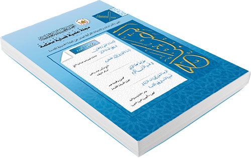
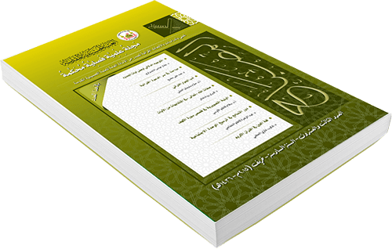
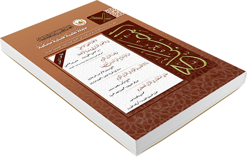
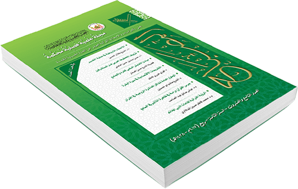

مِن فِقه اللِّسان في مُدوَّنة عُلوم القرآن تأمُّلات في أصول مُقدِّمات تحليل النَّصّ القرآنيّ، ثقافة التَّصوُّرات وسُلوك المَلَكات
أ.د. عِماد جبَّار كاظم داود
أثرُ علمِ الکلام ِفي التقدیرات والتأویلات النحویة والبلاغیة في النص القرآني
سيد أحمد موسوي پناه
المناظرةُ والجدلُ القرآني دراسةٌ قرآنيةٌ في الأساليبِ وطرقِ الاستدلال
إبراهيم عبد الجليل خرنوب جاسم/ أ.م.د. حميد جاسم عبود عباس الغرابي
دراسةٌ حولَ عواقبِ التهربِ من الحق في الامم السابقةِ
هيثم جبار مخيف فارس الغانمي / محمد جواد نجفي
التناصُ القرآنيِ والروائي في قصيدةِ - المقصورة العلية في السيرة العلوية - للشيخ محمد علي اليعقوبي
د. حسين محمديان / د. حجت اله فسنقري / فرنجيس قرباني
احكامُ آيتي غض البصرِ في سورةِ النور
عذراء عليكان بدر الموسوي
مفهومُ القوةِ في القرآنِ الكريمِ
أ.م.د.هدى عباس محسن الجميلي / احمد حسين عبد جبار
فيضانُ النعمِ : أسرارُ 'ماءً غدقًا بينَ جمالياتِ الرزقِ المادي وروحانيةِ البركةِ في القرآن الكريم
احمد صبيح عبيد حسن / د. حسين مناحي زاده
نظريةُ نهاية التاريخِ بين فوكو ياما والأسس القرآنية - دراسةٌ مقارنةٌ
علي حسين عبد الخفاجي / د. رياض عبد الرحيم الباهلي
المُصْحَفُ المنسوب إلى الإمام عليّ عليه السلام في مَكتَبَة أَمِير المُؤمِنِينَ عليه السلام فِي النَّجَفِ الأشرَفِ تَعرِيفٌ بِهِ وَبِظَوَاهِرِهِ
م.د. أحمد جاسم محمد النَّجفي / د.مرتضى عباس توكلي
الفكرُ القرآني الجديد عندَالعلامة الدكتور محمد الصادقي الطهراني
حمزة إمام موسى
الإبتلاءُ والسُّننُ الكونيةِ في القرآنِ الكريم
م.د. رائد عبد السادة حمزة المحمودي
آیةُ الإكمالِ عندَ علماءِ الشیعةِ و الجمهورِ دراسةٌ في دلالةِ المفردات
الشيخ عيسى محسني
علاقةُ قانون العلّيةِ بالدعاء في المنظور القرآني دراسةٌ تفسيريةٌ
علي سلمان جبر / ا.م.د. ضرغام كريم كاظم الموسوي
أزماتُ الحروبِ في القرآنِ الكريم في ضوء رواياتِ أهل البيت (عليهم السلام) دراسةٌ تفسيريةٌ
أ.م.د.هدى عباس الجميلي / محمد رؤوف الصراف
جمالياتُ التناص القرآني في شعرِ محمدرضا الشبيبي - قراءةٌ نقدیةٌ
أ.م.د. عبدالوحيد نويدي - دانا طالب بور
ميراثُ المرأةِ دراسةٌ نقديةٌ في كتابِ (الاخبار عن المرأة) للكاتبة ألفه يوسف على ضوء تفسيري الميزان ومفاتيح الغيب
تماضر حسن صالح المخاضيري / أ.م.د. مواهب الخطيب
آيةُ التبليغِ مقاربةٌ تداوليةٌ
أ.م.د. خيرالدين علي الهادي سليمان
الأصولُ النظريةِ لهندسة ِالنص القرآني: بنائيةُ الدكتور محمود البستاني أنموذجا
محمد كاظم خليف الحميداوي / د.علي رضا محمد رضايي / د.صادق فتحي دهكردي
دراسةٌ في آراءِ نصر حامد ابو زيد في الدراساتِ القرآنيةِ
محمد هاشم جبار مهدي العوادي
الحديثُ ودورهُ في الاتجاهِ التفسيري في القرآنِ الكريم
م.م. فوزي محمد عواد الخفاجي
نقدُ القراءةِ المعاصرةِ لآيات الأحكام في فكرِ د.محمد شحرور التعدديةُ الزوجيةُ أنموذجا
أ.م.د.م.م.جاسم شمخي العقيلي
موقفُ القرآنِ الكريمِ من عقيدةِ التناسخ وبطلانِها في ضوءِ كتبِ التفسير
محمد عيدان محمد
أسبابُ ترجيحُ الرواياتِ عندَ السيد المدرسي في تفسيرِه "من هدي القرآن" تحليلٌ ومناقشةٌ
أ.د.محسن نورائي / أ.م.د. زينب السادات حسيني / كوثر نصيف جاسم
القراءاتُ القرآنيةُ عندَ الدكتور محمد حسين الصغير - رحمه الله تعالى
م.د. مؤمل جواد خليفة
موقف الاستشراق من نزول الوحي
م.م.حسين نبيل جواد
معاني الحروف الجارة والعاطفة في التفاسير المأثورة قراءة معادة
مريم حجت الله ميرزاخاني / سيد محمدرضا عبدالله ابن الرسول / رضا محمدكريم شكراني
عِبَادُ الرَّحْمـٰنِ قُدْوةً - دراســـةٌ تحليليـــةٌ في سورة الفرقان
زهراء عبد الأمير خشان / أ.د.عباس امير معارز
سورةُ الغاشيةِ - دراسةٌ نَصِّيَّةٌ
أ.د. جمال عبد العزيز أحمد
عَوَارِضُ التَّرْكِيبِ فِي سُورَةِ الْمُلْكِ - دِرَاسَةٌ لُغَوِيَّةٌ دِلَالِيَّةٌ
د. أسماء عبد الرؤوف إبراهيم جعفر
أثرُ أسلوبِ الجدلِ الكلامي في تفسيرِ آيات الإمامةِ والولايةِ عندَ الفخر الرازي في تفسيره ِالكبير - دراسةٌ تحليليةٌ نقديةٌ
أ.م.د. ناهد الشماسي / فلاح سبتي
فضائلُ الإمامِ علي عليه السلام في كتبِ التفسير الأندلسية - دراسةٌ تحليليةٌ
م.د. ستار جليل عجيل
ماهيةُ الحسدِ والسحرِ - دراسةٌ تأصيليةٌ في القرآنِ والسنةِ
غفران كاظم داخل / م.د. إيثار نصير دواره العباس
أسبابُ العلاقةِ الترابطيةِ بينَ القرآنِ الكريم، والسنةِ الشريفةِ، وأبرز ثمراتها
م.د. رحيم علوان عبد شاهر الابراهيمي
جمعُ القرآنِ وتدوينُه - ردودٌ على شبهات معاصرة
م.د. قاسم عباس لعيبي
التفسير اللغوي للقرآن في التكملة والذيل والصلة للصّغّانيّ ت650هـ - عرضٌ ودراسةٌ
أ.م.د. ظافر عبيس عناد الجياشي
مدبراتُ (الملائكة) عالم التكوين وحدودها في القرآنِ الكريم
حيدر عباس فاضل الأعرجي / محمد كاظم رحمان ستايشى
آيَاتُ الأَنْفُسِ في القُرآنِ الكَرِيْمِ - دِرَاسَةٌ تَحْلِيْلِيَّةٌ
بنين علي عبد عون / أ.م.د. خالد عبد النبي عيدان الأسدي
رسالةٌ في وجهِ انضمامِ الهاء من قولهِ تعالى ( عليهُ الله ) لـ محمد بن عبد الوهاب الهمداني - قاضي الحرمين (ت : 1305 هـ ) إعراب (عليهُ الله)
أ.د. حيدر كريم كاظم الجمّالي

كَسْرُ الافتراض السَّابق في الخِطابِ القُرآنيّ مع مدخل أوَّلي لمفهوم الإعجاز قراءة أُخرى في ضوء التَّفكير التَّداوليّ - القِسمُ الثالث
أ.د. عِماد جبّار كاظم داود / م.د. سليمة فاضل حبيب
التَّكاملُ الإنسانيّ في القرآنِ الكريمِ الإمامُ الحسين "عليه السلام " نموذجًا
م.م. رائد عبد السادة حمزة المحمودي
آیةُ الولایةِ ودلیلُ السیاقِ عندَ الفخر الرازي
الشیخ محمدهادي المنصوري / الشيخ عيسى محسني
انتماءُ العلامةِ الآصفي لتفسيرِ القرآنِ الكريم
ضرغام شنيت جابر العبيد / د. فاطمة دسترنج
تحليلُ فطرةِ اللهِ في خلقهِ من منظورِ القرآنِ الكريمِ والسيرةِ الفاطميةِ
د. زينب محمد بدّاي السالم
دراسةٌ في إفادةِ أسلوب "لا أقسم" معنی الإثبات في القرآن موازنةٌ ونقدٌ
د. سيد أحمد موسوي پناه / د. عليرضا عزيزي
الأثرُ الأسلوبي للخطابِ القرآني في الشعرِ العربي التحدي والتناص والمرجعية
م.د. منذر زيارة قاسم
الموجهاتُ الخارجيةُ في قراءةِ سورة الكوثرِ عند المفسرينَ (الزمخشري ، والطبرسي، الفخر الرازي) مثالًا
م.م. أحمد جاسب سعيد الكريطي / أ.م. د. علي محمّد ياسين
دراسةٌ فی الآية 59 من سورةِ الأحزابِ في حجاب الوجه والكفین مع التأكيد على أقوالِ مفسري الشيعةِ والسنة
د. عبدالهادي صالحي زاده / د. سيد محمد حسين ميري / د. مرتضى مولوي وردنجاني
أدواتُ القسمِ في القرآنِ الكريم وعلاقةُ المُقسَم به والمُقسَم عليه - دراسةٌ دلالية ٌ
م. م. حيدر حمود عبد الأمير الأسدي
علّةُ خلقِ الكافرِتَأليف الشيخ محمّد بن الحسن بن عليّ الحرّ العاملي المتوَفَى سنَة 1104 ه / القسم الثالث
تَحقِيق : فرَاس خُضير حسن الأسديّ
المخطوطات القرآنية المصورة في مركز تصوير المخطوطات وفهرستها العتبة العباسية المقدسة / القسم الرابع
صلاح مهدي السراج
ثلاثيات سورة يوسف
أ.د. حازم سليمان الحلي
التعايش السلمي في القرآن والسُّنة
الشيخ الدكتور علاء عبد الهادي المالكي
تلاوة القرآن الکریم وتأثیرها النفسي على الإنسان من منظار القرآن
زهرا ربيعي محسن / د. علي خضري
الروايات المفسرة لـ قصة انبياء بني اسرائيل
حسين جبار الزاملي / د. عليرضا الطبيبي
مقدمات العلاقة التفسيرية والتأويلية بين القرآن الكريم والسنة الشريفة
رحيم علوان عبد شاهر الابراهيمي / أ.د. السيد نذير الحسني / أ.د. الشيخ طلال الحسن الطليباوي
المكانة الفردية والأخلاقية للمرأة في الفكر الإسلامي من وجهة نظر تفاسير القرآن الكريم
د. علي رضا طبيبي / د. فاطمه دست رنج
أثر التعصب المذهبي والتقليد الخاطئ في التفسير الفخر الرازي في تفسيره لآيات الإمامة والولاية أنموذجًا - دراسة تحليلية نقدية
أ.م.د. ناهد الشماسي
أرکان التداولیة في سورة القدر - دراسة تطبیقیة
د. سيد أحمد موسوي پناه / عليرضا عزيزي / هاجر مهدي فتح الله
أثر المشاكلة التركيبية في التوجيه النحوي عند أبي حيان الأندلسي في تفسيره البحر المحيط
أماني عبد الزهرة عبد الصمد سلمان / أ.د. شعلان عبد علي سلطان
توظيف آي القرآن في خطاب السيدة زينب عليها السلام
أحمد موفق مهدي / حوراء حمدي جبار
دراسة في مفهوم الطاغوت وطبیعته من المنظور السلفي الجهادي بالارتكاز علی رأي ابن تیمیة
حمزة علي بهرامي
هرمنيوطيقا شلاير ماخر في فهمِ النصِّ القرآني"عرضٌ ونقدٌ "
أ.م.د. سلام عبد الحسن ساجت
رسالة في تفسير قوله تعالى: " ثُمَّ ٱلَّذِينَ كَفَرُواْ بِرَبِّهِم يَعدِلُونَ " للقاضي الملّا أحمدَ بنِ رُوح الله الأنصاريّ - ت 1008هـ
م.د. علي حكمت فاضل محمد / م.م. عمر ماجد السنوي
المختصر النافع من الجزء الخامس عشر من تفسير الامثل
زهراء كرار فاضل / أ.د. علي عباس الاعرجي
المنهج التربوي في التفسير المنهجي للقرآن العظيم للعلامة الدكتور محمد حسين الصغير
أ.د. محمد كاظم حسين الفتلاوي
كَسْر الافتراض السَّابق في الخِطابِ القُرآنيّ مع مدخل أوَّلي لمفهوم الإعجازقراءة أخرى في ضوء التَّفكير التَّداوليّ "القِسمُ الثاني"
أ.د. عماد جبار كاظم داود / سليمة فاضل حبيب
افتراقات قواعد الترجيح المشتركة بين المفسرين والأصوليين - الدليل النقلي من الكتاب والسنة أنموذجاً
عباس حسن عبد الامير خلف التميمي / د. محمد الشريفي / د. محمد مهدي شاهمرداي / د. علي اكبر ايزدي فرد
الأنساق القرآنيَّة باعتبار التّرف وآثاره شعر حكام الأندلس مثالاً
جعفر صادق وهاب
التربية الوقائية في القرآن الكريم - آيات الربا إنموذجاً
م.د. فوزي خيري كاظم
ظهور الأمراض و الكوارث الطبيعية من منظور القرآن و الروايات
د. سيد محمد حسين ميري / د. عبدالهادي صالحي زاده / د. مرتضى مولوي وردنجاني
الإشارات القرآنية للراحة النفسية - صور قرآنية
د. احمد حسين جاسم الصفار
تحليل المضامین المؤثرة في منع الإيمان بالقرآن الکریم
الهام عمومي / محمد مهدي شاهمرادي فريدوني / مهدي تقي زاده طبري
الدلالة التركيبية للخصائص التعبيرية والاسلوبية في ايضاح المعنى سورة يوسف انموذجًا
م.كريم سوادي معين ناصر
معين العِرفان في آياتِ الجزء الثلاثين من القرآن
أ.م.د. علي السالمي
مكونات السرد في سورة الواقعة
علي كامل عباس الحسيني
المفيدة في علم التجويد لمحمد علي بن فرج الله البكاري - كان حيًّا سنة 1006هـ
دراسة وتحقيق : أ.م.د. قاسم رحيم حسن / أ.م.د. جواد كاظم عبد / م.م. صبا فريد برتو
علّةُ خلقِ الكافرِ تَأليف الشيخ محمّد بن الحسن بن عليّ الحرّ العاملي المتوَفَى سنَة 1104 ه / القسم الثاني
تحقيق : فراس خضير حسن الأسدي
المخطوطات القرآنية المصورة في مركز تصوير المخطوطات وفهرستها العتبة العباسية المقدسة / القسم الثالث
صلاح مهدي السراج
المنهجُ التفسيريِّ عندَ الإمامِ الرضا عليه السلام - دراسةٌ وصفيَّةٌ تحليليةٌ
الشيخ الدكتور علاء عبد الهادي المالكي
كَسْر الافتراض السَّابق في الخِطابِ القُرآنيّ مع مدخل أوَّلي لمفهوم الإعجاز قراءة أُخرى في ضوء التَّفكير التَّداوليّ "القِسمُ الأَوَّل"
أ.د. عِماد جبّار كاظم داود / م.د. سليمة فاضل حبيب
القراءة ُالمعرفيّة للإعجازِ القرآنيِّ تحليلٌ في الوعي المنهجيّ للسّيد محمد مهدي الخِرسان
د. عمّار عبد الرزّاق الصغير
تركيبُ " حبيبِ اللهِ " مفهومُه ومصاديقُه في الكتابِ والسنةِ ـ دراسة تحليلية استقرائية
حسين سعيد نوفل / إشراف : أ.م.د. ثائر عباس النصراوي
لفظُ الجلالةِ في النصِّ القرآني - دراسةٌ لغويةٌ
آيات قاسم محسن / بأشراف : أ.د. حسن منديل حسن العكيلي
تحلیلُ مضمونِ التناسُبِ حولَ آیة (إکمال) بنهجٍ أدبیٍ لآراءِ مُفسری أهلِ السُنةِ قدیمًا و حدیثًا
منصور حسيني / د. محمد حسن صانعي پور( الكاتب المسئول)
أثرُ أسبابُ النزولِ في توجيه معنى النصّ القرآنيِ ودلالتهِ
م. حوراء كاظم جواد الخزاعي
وصفُ حالِ المشركين في سورةِ الأنعامِ المباركة
م.م. كرار جبار حسوني / م.م. مشرق صباح كاظم
تأويلُ قصّةِ موسى في كتابِ أساسِ التّأويل للقاضي النّعمان"ت363هـ "
أ.م.د. عبّاس صادق عبد الصّاحب
رواياتُ أسبابِ النزولِ في تفسير ِ"من هدي القرآن" للمدرسي تحليلٌ ومناقشةٌ
كوثر نصيف جاسم / أ.د. محسن نورائي / أ.م.د. زينب السادات
أدبُ معاملة ِ المرأةِ بينَ النصِّ القرآني وعُرف المجتمعِ العراقي
محمد نعيم حسب جوده الحمودي / م.د. مروة غني العبودي
أثر المكي والمدني في التوجيه النحوي
د. حسين علي محمد
مصنفاتُ الإمامية في آياتِ الأحكامِ - دراسةٌ في الأسلوبِ و المنهجِ
سعد ناصر كاطع / د. ساجد صباح العسكري
العلاقةُ بينَ الكفرِ والظلمِ في القرآنِ الکريمِ - دراسةٌ تفسيريةٌ
رقية حبيب بوركودرزي / أ.م.د. محمد مهدي شاهمرادي
اعتِرَاضَاتُ السَّمينِ الحَلَبِيِّ (ت 756 هـ) النَّحوِيَّةُ في تَفسِيرِ الدُّرِّ المصُونِ عَلَى الوَاحِدِيِّ - ت 468هـ
د. وائل عبد الأمير الحربي
جدليةُ التجديدِ في التفسيرِ بينَ الاصوليينَ والحداثيين
هشام محسن حايف / د. ساجد صباح العسكري
تصنيفُ المخطوطاتِ القرآنيةِ والكتبِ العلميةِ في خزانةِ العتبة الحسينيةِ المقدسةِ
السيد علي عارف صالح الموسوي
محاسبة النفس وأثرها في عملية بناء الذات وتطويرها وفق القرآن والعترة
دعاء حسون كاطع عباس الابراهيمي/ أ.م. د. أقبال وافي نجم/ كلية العلوم الاسلامية / جامعة كربلاء
الوصية بين القرآن والقانون والشريعة...الوصية بالتركة أنموذجا
أ.م.د. عزام فرحان شهاب الربيعي / جامعة الوارث / كربلاء المقدسة
الحوار والخطاب القرآني في التودد والعناية بالآخر الديني ( الديانة المسيحية أنموذجا)
م.د. حليم عباس الفتلاوي/ كلية العلوم الاسلامية / جامعة بغداد
القوامة ، والنشوز ، والشقاق في الإسلام دراسة مقارنة بين العلامة الطباطبائي والدكتور محمد شحرور
صادق دحام ظفير الركابي / جامعة المصطفى العالمية
الرواياتُ المفسرةُ لاَياتِ الإمامةِ
م.م. حسين جبار الزاملي / جامعة الإمام جعفر الصادق عليه السلام / فرع ذي قار
أثر الدراسات القرآنية المعاصرة في إحياء الخطاب الديني (دراسة تحليلية)
محي جابر محمد / أ.د. علي رضا طبيبي / جامعة أراك الحكومية الأيرانية
منهج العراقي (ت806هـ) في ألفية غريب القرآن ( دراسة تحليلية )
أ.د. حسن كاظم أسد الخفاجي / كلية التربية الأساسية / جامعة الكوفة
الإعجاز القرآني وأثره في كونية اللغة العربية
أ.م.د. نزار بنيان شمكلي / كلية التربية ابن رشد/ جامعة بغداد
التوجيه الدلالي للأمر بين الطبرسي والطباطبائي
صفاء غني عبدالزهرة / د.عبّاس يد اللهي فارساني / جامعة شهيد تشمران أهواز/ أهواز/ ايران
مواطن ومواضع الاحتباك في سورة غافر
نور داود شهاب احمد / د. مواهب الخطيب / جامعة الأديان والمذاهب / قم المقدسة
ظاهرة العدول الصوتي في القرآن الكريم
د. غلام رضا كريمي فرد / د. ولي بهاروند / د. محمود آبدانان مهدي زاده / د. حسن دادخواه تهراني
الملامح السيميائية والحجاجية في القصص القرآني قصة النبي إبراهيم عيه السلام في سورة الأنبياء أنموذجا
د. عزت ملا ابراهيمي / د. بايزيد تاند / جامعة طهران/ ايران
القراءات الشاذة وأثرها في فهم القرآن - قراءة ابن مسعود أنموذجا
د. علي صاحب الهاشمي / جامعة المصطفى العالمية
دراسة مقارنة في إستراتيجيات الترجمات الفارسية والصينية والألمانية لآیات ظاهرها النظرة السلبية للنساء (دراسة تقابلية)
د. محمد رحيمي / د. أحمدرضا آريان / د. آذر فرقاني / جامعة أصفهان/ إيران
تفسيرُ حکمي على الآيتينِ الأولينِ من سورةِ يونس السيّد أبو الحسن الرفيعي القزويني - ت 1396 هـ
حقّقها وقدّم لها وعلّق عليها : أيّوب ناصر نعمة
علّة خلق الكافر تأليف : الشيخ محمّد بن الحسن بن عليّ الحرّ العاملي المتوفى سنة 1104 هـ - القسم الأول
تحقيق : فراس خضير حسن الأسدي
العقل في القرآن الكريم - دراسة تفسيرية في المفهوم والألفاظ والوظائف
أ.د. محمد كاظم حسين الفتلاوي/ جامعة الكوفة
قانون التوازن في القرآن الكريم - التوازن العقدي انموذجا
فاطمة علي حسن الشاوي / أ.د. ضرغام كريم كاظم الموسوي / جامعة كربلاء
التلازم المعرفي بين القرآن الكريم والعترة الطاهرة
م.د. ساجد صباح العسكري/ جامعة ذي قار
ميراث الزوجة في القرآن الكريم دراسة في إرث العقار عند الإمامية
أ.د. ناهدة جليل عبدالحسن الغالبي / حوراء علي أحمد الموسوي / جامعة كربلاء
اثر القيد الشرطي في الدلالة التركيبية لايات الاحكام في تفسيري روح المعاني والميزان- دراسة موازنة
أ.م.د. ابهر هادي محمد / جامعة المثنى/ أ.م.د. عدنان عبدالكريم جمعة / جامعة البصرة
الوقف والابتداء عند القسطلاني (923هـ) ، والقاري (1014هـ) على متن الجزرية
أ.د. حيدر فخري ميران / آيات مسلم طالب / جامعة بابل
معالجة ظاهرة الإنسجام على أساس التكرار في سورة آل عمران
حسن ساقي آلني / جامعة العلامة الطباطبائي / د. حسن مجيدي - حافظ ميرشكاري / جامعة الحكيم السبزواری
المخالفة الصوتية بالحذف في القرآن الكريم
أ.د. حسن غازي السعدي / هدى حامد ناصر/ جامعة بابل
قدرة الاحتواء في النص القرآني وأثرها في توليد الدلالة القرآنية
م.د. حيدر عواد رفيج / جامعة ذي قار
سورة الشمس دراسة تحليلية
م.م. فاطمة عبد الحميد / م.م. صاحب كريم صاحب / جامعة كربلاء
العلّة النحوية في المنصوبات في كتاب البيان في غريب إعراب القرآن لأبي بركات الأنباري-ت577هـ
سجى محمد علي نجم الموسوي / أ.د. مؤيد جاسم الخفاجي / جامعة كربلاء
الاتساق المعجمي وأثره في التماسك النصي (سورة الرعد أنموذجا)
عبدالوحيد نويدي / جامعة شهيد تشمران أهواز / ماني محيي / جامعة العلامة الطباطبائي - طهران
التبيان في تفسير غريب القرآن للسيد محمّد عليّ المرعشي الشهرستاني (ت 1344هـ) القسم الأول / باب الإلف والباء والتاء
دراسة وتحقيق : م.م. حيدر حسن عكله الموسوي / جامعة الرازي / كرمنشاه – ايران/ إشراف : أستاذ مجيد محمدى
اربع رسائل في القرآن الكريم لرشيد الدين الوطواط - ت 573 هـ
تحقيق: أ.م.د. مجتبى عمراني ﭘور/ جامعة طهران/ م.م. مصطفى صباح الجنابي / جامعة قاسم الخضراء
الهرمنيوطيقا الفلسفيّة وأثرها في فهم القرآن
الشيخ احمد مزهر السعد
المعرفة الفطريّة والمعرفة الاستدلاليّة في القرآن الكريم
رعد عبد احمد / أ.د. محمد محمود زوين
حجية ظواهر القرآن الكريم بين النفي والإثبات
موسى جعفر بوجوهر
الاساليب القرآنية في الدعوة الى العقيدة الاسلامية
م. مهدي رزاق حمادي
تجليات المزج التصوري في الخطاب القرآني
أ.د. هاشم جعفر حسين الموسوي / م.م. علي محمد نور مجيد
الدلالة الإيحائية لألفاظ الابتلاء والسنن الإلهية في سورة نوح عليه السلام
أ.د. مؤيد جاسم محمد حسين
الجذر (ب س ط) ومشتقاته في القرآن الكريم - دراسة دلالية
م.م. محمد صدام فلحي البطاط
من مظاهر الدلالة الصوتية في سورة الواقعة: الإيقاع وأنماطه ودلالته
أ.د. خليل خلف بشير
المباحث البيانية في تفسير التحرير والتنوير لابن عاشور
م.م. حيدر فخري حمود التميميّ
الصورة البيانية الحجاجية في القرآن الكريم سورة آل عمران مثالا
علي جعفر الربيعي / أنسام عادل الخزعلي
التوازي في سورتي التكوير والشمس
م.م. حبيب حسين علي حمزة
شبهات المستشرقين حول مصدر القرآن الكريم
سحر تركي مهجهج
دراسة الروايات التفسيرية الواردة في أغواء آدم
السيد مهدي عيسى البطاط
المخطوطات القرآنية المصورة في مركز تصوير المخطوطات وفهرستها العتبة العباسية المقدسة - القسم الثاني
صلاح مهدي السراج
بلاغة الغدير؛ الجغرافيا القرآنية للواقعة، والملحظ الإعجازي في التبليغ: مدخل تحليلي قرآني
أ.د. عباس أميرمعارز
تفسيرُ القرآنِ وتأويلُه في أحاديثِ الإمامِ عليّ عليه السلام ومروياته - دراسةٌ في مجمعِ البحرين لفخرِ الدّين الطّريحي -ت1085هـ
مريم منصوري / أ.د. عبد القادر سلاّمي
كونُ عليّ (ع) نفس الرسولِ (ص) يقتضي كونَه (ع) إماما - دراسة تحليلية عن كلمة "أنفسنا "في آية المباهلة
جامع امائو صالح
مروياتُ السيدةِ الزهراءِ عليها السلام في تفسيرِ القرآنِ الكريم - جمع ودراسة
م.م. خالد عبد النبي عيدان الأسدي
ظاهر القرآن وباطنه وحجتاهما وفق روايات اهل البيت عليهم السلام
قاسم نوماس الحلو / د. مرتضى الايرواني / د. عباس اسماعيلي زادة
موقفُ أئمةِ أهلِ البيت عليهم السلام من فتنةِ خلقِ القرآنِ
م.د. فوزي خيري كاظم
أقسامُ النفسِ وطبيعتِها في القرآنِ وفي كلامِ العترةِ الطاهرة
دعاء حسون كاطع الابراهيمي / أ.م.د. أقبال وافي نجم
الدلالةُ الأدبية في تفسيرِ الامام الحسن العسكري عليه السلام - إيحاءُ المفردةِ مثالا
سارة علي هادي العبودي / أ.د. أمجد حميد الفاضل
أصول التكامل الإنساني في القرآن الكريم والصحيفة السّجاديّة
عبد الله پاته با
اشكاليّة توظيف مفهوم الأسلوب في علم التفسير
حسن عبد الهادي رشيد اللامي / أ.م.د. اقبال وافي نجم
الإعراض عن الالتزام الديني دراسة قرآنية في المفهوم والأسباب وسبل الوقاية والعلاج
د. أحمد رزاق فاضل الأسدي
قراءة تحليليَّة ناقدة في تصور سروش لعرضية اللغة العربية في القرآن الكريم
أ.د. سيروان عبدالزهرة الجنابي
التحقيق في دلالة بعض الألفاظ والتراكيب القرآنية محاولة لفهم جديد
أ.د. صاحب منشد عباس
دوال التَّأوِيل فِي كتابِ كنز جامع الفوائِد ودافع المُعانِد
م.د. إيمان كريم جبّار الحريزيّ
مباني الفقه الإسلامي من منظار القرآن الكريم - مجال الحدود والقوانين الإلهيّة ومعيارها ومبانيها
السيد منذر الحكيم
آية الجزية عند مفسري السنة - دراسة نقدية ـ تحليلية ـ مقارنة
الشيخ الدكتور علاء عبدالهادي المالكي
دلالة العدول الصرفي على المدح غير الصريح في التعبير القرآني
صفا عبد الجبار حسن / أ.د. صالح كاظم عجيل
التأويل التقابلي في سورة الفاتحة - قراءة من منظور محمد بازي
علي جعفر حسن / أ.م.د. علي محمد ياسين
طرق التعليم والتدريس في القرآن الكريم
الشيخ الدكتور هاشم عبدالنبي علي
أثرُ الفصلِ والتوسُّط في التوَّجيه النحَّويّ في كتاب الدُّر المصون للسَّمين الحلبيّ - ت 756هـ - الفصل بين أجزاء الجملة أنموذجا
إنصاف كاظم صافي / أ.د. وائل عبدالأمير الحربي
سورةُ التكاثرِ - دراسةً نحويةً دلاليةً
سعد عبدالسادة شبلاوي
وجوه المعنى والمقصد القرآني في قوله تعالى: (كُنْتُمْ خَيْرَ أُمَّةٍ أُخْرِجَتْ لِلنَّاسِ ) دراسة دلالية - على وفق المعطيات اللغوية والقرآنية
أ.م.د. حسين صالح ظاهر
أثر ترتيب المواضع القرآنية بحسب التنزيل في تعديل نتائج البحث
أ.م.د. حيدر هادي أحمد
منهج السلمي في كتابه حقائق التفسير
منار علي عواد شندل / أ.م.د. محمد حسين عبود الطائي
القرينة اللغوية وعلاقتها بسياق المقام لدى الأصوليين - دراسة لسانية في آي الذكر الحكيم
عباس حسن عبدالامير خلف التميمي / د. محمد الشريفي - الكاتب المسؤول / د. محمد مهدي شاهمرادي / د. علي اكبر ايزدي فرد
آية التطهيردراسة وفق النّظرة التداوليّة
د. سعيد عكاب عبدالعالي
دور السیاق في تفسیر الآیات المتشابهة لفظًا
أ.م.د. داود إسماعيلي
البنيوية وأثر الاستشراق في الدراسات القرآنية المعاصرة دراسة نقدية
علي شاكر سلمان العارضي / أ.د. حكمت عبيد حسين الخفاجي
الرد على القائلين بتأريخية النص القرآني - نصر حامد أبو زيد وعبد الكريم سروش أُنموذجًا
أ.م.د. أركان خليل كاظم
فائدة في ذكر بعض من المواعظ القرآنية السيد علي حسين بن خيرات علي الزنجفوري الهندي - ت 1310هـ
تحقيق : أ.د. عبد الإله عبدالوهاب هادي العرداوي / أ.د. حسن كاظم أسد الخفاجي
المخطوطات القرآنية المصورة في مركز تصوير المخطوطات وفهرستها العتبة العباسية المقدسة
صلاح مهدي السراج
بيان حقيقة ليلة القدر وكيفيّة الاختلاف فيها بحسب اختلاف الآفاق السيّد أبو الحسن الرفيعي القزوينيّ - ت 1306- 1396هـ
ترجمة : أيّوب ناصر نعمة
القراءات و الشیعة في القرن الأوّل
أ.م.د. إبراهيم الإقبال / د. السيد مهدي الحسيني الميلاني
معنى تواتر القراءات من نظر الفريقين - دراسة نقدية مقارنة
الدكتور الشيخ محمد فاكر الميبدي / علي صاحب الهاشمي
السيد الخوئي والقراءات القرآنية
م.م. ليث عبد الحسين فرحان العتابي
التحري الإركيولوجي للقراءات القرآنيّة القراءة الصحيحة والقراءة الشاذّة وجها لوجه ـ نحو مقاربة للكشف عن معنى آخر
أ.م.د. حكيم سلمان السلطاني
القراءات القرآنية للإمام الباقر عليه السلام
م.م. صاحب كريم الخاقاني / فاطمة عبد الحميد الكابولي
التوجيه الصرفي والنحوي للقراءات القرآنية ـ الإمام جعفر بن محمد الصادق –عليهما السلام ــ ( اختيارا )
أ.د. حيدر كريم الجمّالي
القراءات السبعة بين القبول والرفض
م.م. عماد كاظم مانع
أَثَر القِیَاسِ فِي الحَدِّ مِن أسالیب اللّغةِ العربیّة/ القراءات القرآنیة أُنموذجاً
د. محمّد دزفولي / سيد أحمد موسوي پناه / د. محمد حسن فؤاديان / د. غلام عباس رضايى هفتادُرِي
النفس الإنسانية بين البناء والهدم رؤية تحليلية في ضوء القرآن والسنة
د. احمد حسين جاسم الصفار
الاختيار في محيط الأفعال المتعلقة بجوارح الإنسان في القرآن الكريم
أ.د. سليمة جبار غانم / م.م. عبد الحي عبد النبي زيبك
دلَالة الاقترانات اللَّفظية للفظةِ الشِّراء في القُرآنِ الكريم
م.د. لؤي طارق علي التميمي / م.د. سناء زكي علي
العمل اثره وجزاؤه في الفرد والمجتمع - دراسة قرآنية
م. رزاق مهدي حمادي السعدي
اجازة القراءة و رواية القراءات الاجازة الثانية - المجيز : حسين علي محفوظ
دراسة و تحقيق : د. عماد الكاظمي
الموجز المبين في قصص القرآن الكريم ـ تلخيص كتاب : (دراسات فنية في قصص القرآن ) للدكتور محمود البستاني
ايلاف محسن جواد / إشراف : أ.د. علي عباس الأعرجي
دلالة مصطلح "معاني القرآن" وتحققه في معاني قطرب - ت 214 هـ
أ.د. سعيد جاسم الزبيدي
التَّناصّ القرآنيّ في "دُعاء السِّمات" قراءة في ضوء نحو العلاقات ـ المعايير النَّصّيَّة
أ.د. عماد جبّار كاظم داود
مرويات الإمام الهادي ( عليه السلام ) في فهم الدلالة القرآنية
الشيخ محمود أسود عبدالله العتبي
الاعجاز القرآني في قصة موسى (ع ) دراسة مفصلة في ضوء القرآن والسنة
م.د. قاسم شهيد محمد
المثالُ الواويُّ في التعبير القرآني بين الـتأثيل المعجميّ والتَّطوّر الصوتيِّ
م.د. كاظم عجيل سربوت
الأسِّباط و الأحفاد ــ دراسة دلالية
م.د. سحر ناجي فاضل المشهدي
النفس وخلودها في القرآن عند العلامة الطباطبائي
سلام عبد الحسن ساجت
السماء والأرض في القرآن الكريم - دراسة في ضوء التفسير بالمصاحبة
أ.م.د. مجيب سعد
جمع القرآن في عهد النبي ( ص )
م.د. عزام فرحان الربيعي / م.د. علي احمد ناصر
تأويل النّص القرآني عند محمد أركون سورة الكهف أنموذجا
أ. د. أمجد حميد عبد الله / مصطفى يوسف حسين يوسف
مراحل نزول القرآن الكريم بين عمودية وأفقية الرسالة ــ دراسة مقارنة
محمد جابر علوان حنتوش الحسيني
النسخ معانيه وموارده في القرآن الكريم والكتاب المقدس
أ.د. ستار عبد الحسن جبار الفتلاوي
فهرس نُسخ المصاحف والتفسير وعلوم القرآن الخطّيّة في خزانة مخطوطات مكتبة الإمام الحسن (ع ) العامة
حيدر عبدالباري الحداد
الذاكرة القرآنية بحث في مفاهيم نفسية واجتماعية وتاريخية
أ.د. حسن كريم ماجد الربيعي
دور المفسر برؤية هرمينوطيقية
د. مواهب صالح الخطيب
دلالة التحول في المفردة القرآنية
د. أسعد جواد كاظم
الدلالة النفسية في القرآن الكريم - سورة الواقعة اختيارا
م.م. باسم شعلان خضير
علي عليه السلام في القرآن
أ.د. حازم سليمان الحلي
المصاحبات المقيدة في القرآن الكريم الفاظ ( الشقّ و الشّقاق ) أنموذجا
أ.م.د. قصي جواد محمد - م.د. إيمان جبار الحريزي
الضّاد و الظّاء في سورة الكهف قراءة في العدد و الدلالة و العلاقة بالوسيطة
أحمد سعيد عبيدون
الامتدادات القرآنية في اقتباسات الخطاب الحسيني خطبة عاشوراء مثالاً
أ.د. إبتسام عبدالكريم المدني - الباحثة تبارك مجيد بنيان
العمل التطوّعي وأهميته في بناء المجتمع الإسلامي من المنظور القرآني - دراسة تحليلية
أ.د. عباس أمير معارز - الباحثة فاطمة حيدر عبدالحمزة
التفسير البيان للقرآن الكريم - سورة الصافات اختياراً
أ.م.د. إيمان عبدالحسين العلياوي - الباحث : سجاد رحيم كريم الشريفي
الشّاهد القرآنيّ في رياض السّالكين في شرح صحيفة سيّد السّاجدين
أ.د. علي عباس الأعرجي - الباحثة : هدى إبراهيم صالح
التعصب الديني من المنظور الإسلامي لدى طلبة كلية التربية
د. بلسم السامرائي - الباحث : صلاح سالم عيدان
آية المباهلة مقاربة تداولية
م. م. خيرالدين علي الهادي - أ.د. حسن عبدالغني الأسدي
صورة النبي (ص) عند الصوفية في ضوء الوحي القرآني
أ.د. عباس صادق عبد الصاحب
ما فرعه الراغب في مفرداته من الدلالى الحقيقية
أ.م.د. كاظم فضيل شاهر
الحجاب في نظر القرآن و مفسري الفريقين
د. محمد جواد اسكندرلو
سورة الفيل بين التراث الاسلامي و فهم المستشرقين
أ.د. عادل عباس النصراوي
رسالة في بيان همزة القطع و الوصل لمحمد بن علي الحسيني الجرحاني ابن الشريف الجرحاني ( ت 838 هـ )
تحقيق : أ.م.د. نجلاء حميد مجيد
مقدمة كتاب تفسير الأئمة ناسخ تفاسير الأمة للشيخ محمد رضا المعروف بـ ( أفضل عصره )
ترجمة : الشيخ حسين علي السعداوي
فهارس مجلة المصباح القرآنية الأعداد : (1 - 40 ) خلال عقد من الزمن
إعداد و توثيق و فهرسة : أ.د. محمد كريم إبراهيم حسين الشمري
اشكالية فهم النص القرآني عند المستشرقين للدكتور عادل النصراوي
أ.د. باقر محمد جعفر الكرباسي
ولاية الإمام علي عليه السلام بين حديث الغدير و القرآن الكريم - قراءة تأويلية
أ.م.د. حاكم حبيب عزر الكريطي
الغدير في القرآن الكريم
أ.د.خليل خلف بشير
( بَلِّغْ مَا أُنزِلَ إِلَيْكَ مِن رَّبِّكَ ) بحث في أسباب النزول
د. مروان صلاح خليفات
المغايرة السياقية في آيتي الغدير دراسة في ضوء إعلامية كسر التوقع النصي
أ.م.د. زهراء جياد عباس البرقعاوي
دلالة لفظ المولى على ولاية أمير المومنين عليه السلام في تفاسير أهل السنة و الجماعة
أ.م.د. كريم حمزة حميدي
حادثة الغدير بين الرواية التاريخية و التفسير القرآني المفسرون الأندلسيون أنموذجا
أ.م.د. قاسم عبد سعدون حسن
توظيف الاقتباس القرآني و النبوي في خطبة الغدير
م.م. فرقان مهدي عباس حيدر
آيات الغدير في القرآن الكريم - قراءة تحليلية
م.م. أحمد موفق مهدي
محورية الإمامية في الغدير برؤية قرآنية مقارنة
د. مواهب صالح مهدي الخطيب
الغدير في الدراسات الاستشراقية مقاربة روائية قرآنية
م.م. كريم جهاد الحساني
الإمامة عند الشيعة الاثنى عشرية دراسة عقلية قرآنية روائية
أ.د. محمد حسين بيات - ترجمة : الأستاذ حسين علي السعداوي
رسالة في معنى المولى قوله (ص)- من كنت مولاه فعلي مولاه - لأبي جعفر محمد بن موسى الزامي النحوي كان حيا في القرن السابع الهجري
دراسة و تحقيق : الشيخ رافد الغراوي
فهرس ذخائر آيات الولاية و الإمامة و الغدير في التراث العربي المخوط
حيدر عبدالباري الحداد
من كتب الولاية القرآنية كتاب ( ثم نبتهل ) للباحث غلام رضا صادقي فرد - قراءة و توصيف
الأستاذ حسين علي السعداوي
الترابط النصي في آيات الصيام
د . جمال عبد العزيز احمد
الجهاد بالمال في القرآن الكريم - دراسة تفسيرية
أ. م . د . محمد كاظم حسين الفتلاوي
رؤية معاصرة في التعـدد الوظيفي لاستعمال الأداة (أمَّا) في القرآن الكريم و الموروث اللغويّ
م . د . كريم حمزة حميدي جاسم
آيةُ الجِزْية عند مفسري الإماميّة دِراسة نقدّية تحليلية مقارنة
د . الشيخ علاء عبد الهادي المالكي
قوله تعالى : ( قولوا حطّة ) دراسة دلالية -تاريخية - مقارنة
د. كبرى روشنفكر - امير حسين كلشني
الأساليب الحجاج عند ابن شهرآشوب المازندراني (ت588هـ )في كتابه متشابه القرآن والمختلف فيه -قراءة معرفية
م . د . حيدر عواد رفيج
سورة قريش بين التراث العربي وفهم المستشرقين
أ. د. عادل عباس النصراوي
مآخذ المستشرقين على المعجم العربي و الدّرس الدّلالي القرآني
م . د. نبراس حسين مهاوش
شجرة الطور في شرح آية النور - لعلي الحزين محمد علي بن أبي طالب الزاهدي اللاهيجي الجيلاني ( ت:1180هـ) - دراسة وتحقيق
أ. د. حيدر كريم الجمالي
المنطق في القرآن
أ . م . د. عسكري سليماني اميري -
ترجمة : أيوب ناصر نعمة
المخطوطات القرآنية والمصاحف في خزانة مخطوطات مسجد الكوفة
امير كريم الصائغ
كتابُ الجُّهُود التَّفسيريَّة عندَ الإمام الحُسين (عليهِ السَّلام) عرضٌ ونقدٌ
د. إيمان كريم جبَّار الحريزي
مواد التفكر في القرآن العظيم
أ.م.د. علي خياط / احمد ال سليمان طالب
آثار التوجه الى صفات المتكلم في تفسير القرآن
الشيخ الدكتور عبد الهادي البغدادي
المفاهيم الهندسية و العلمية للألفاظ القرآنية
المهندس الدكتور أحمد الصفار
علم المكي و المدني دراسة تحليلية في المفهوم و الخصائص
السيد زين العابدين المقدس الغريفي
عناصر الثقافة و الطرق العلمية للتثقيف في القرآن الكريم
أ.م.د. طاهرة سادات طباطبائي امين / م.م. زهراء درويش
فهم النص بين الهرمنيوطيقا و لغة القرآن
حمزة امام موسى
التأويل من الجذور إلى الثمر
د. مواهب الخطيب
المنظومة الاستخبارية في منظور القرآن الكريم
أ.م.د. ضرغام كريم كاظم الموسوي / ورود علي عبدالحسين البرقعاوي
فلسفة التربية في القرآن الكريم
الشيخ الدكتور هاشم أبو خمسين
أثر القرآن الكريم في التحول الدلالي و توليد المفاهيم المعنوية الجديدة
أ.م.د. احمد علي نعمة الزبيدي
القصة القرآنية بين ثنائية العقل و النقل
م.م. مشاري علاوي البدري
خصائص التعبير القرآني في سورة الأعلى
م.م. حسن سوادي طعمة / م.م. هاني كنهر عبدزيد العتابي
القرآن سبق المواثيق الدولية في احترام حقوق الانسان
د . محمد عبدالرحمن عريف
مواقع النجوم في القرآن الكريم
الشيخ محمد مهدي نجف
مناهج التفسير في شبه القارة الهندية
اعدّهم للنشر : عدنان اردكاني / احمد حسن محفوظ
وعي القرآن الميسر
السيد علي الرضوي
أثرُ القرآن الكريم في صفوة الصّفات في شرح دعاء السمات للشيخ الكفعمي (ت905هـ) قراءة في المرجعيَّات التَّفسيريَّة ومستوياتها في التوظيف والإجراء - القسم الأول -
أ.م.د. عماد جبّار كاظم داود
النبي محمد صَلَّى اللهُ عَلَيْهِ وَآلِهِ وسلم في القرآن الكريم
أ.د. حازم سليمان الحليّ
الانسانُ الْكَامِلُ فِي آيتَي الْخِلافَةِ وَالأَسْمَاءِ
د. محمد الرّبيعي
تعدُّدُ القُصُودِ في المحَادَثَةِ القُرْآنيّةِ قِراءةٌ تَداوليّةٌ في قِصَّةِ إبراهِيم (عَليهِ السّلامُ)
أ.د. لمى عبد القادر خنياب
المستشرِقُ جُون بِرتون والمبشّر جُون جلكرايست والجدَلُ بشَأْنِ عمَلِيَّةِ جمْعِ القُرْآنِ الكَرِيمِ تحْلِيلُ أطْرُوحتَهُما ونقْدُهَا - القسم الأول -
أ.د. عبدالجبار ناجي الياسري
فَاطِمَةُ الزَّهْرَاءُ فِي الْقُرْآنِ الْكَرِيمِ رُؤْيَةٌ اسْتِشْرَاقِيَّةٌ
م.م. كريم جهاد الحسّاني
الرسالة الخطابية في تفسير قوله تعالى اياك نعبد واياك نستعين تأليف الشيخ احمد الاحسائي (ت1240هـ )
دراسة وتحقيق : حسين جهاد الحساني
التبيان في تفسير غريب القرآن للسيّد محمّد عليّ الشّهرستانيّ (ت1344هـ) في ضوءِ النَّقدِ التّحقيقيّ واللغويّ
أ.د. عليّ عبّاس الأعرجي
علم الأَنْبِياءِ بِحَقَّانِيَّةِ الْوَحْي مُقارَبَةٌ قُرْآنيّةٌ، وَرُوائيّةٌ / الشّيخُ عليّ ربّاني گلپايگاني
ترجمة : داخل الحمداني
نسخ المصاحف الخطّيّة في خزانة مكتبة جامعة النجف الأشرف الدينية
فهرسة وإعداد : حيدر عبدالباري الحداد
الدِّرَاسَاتُ القُرْآنيَّةُ فِي المَجلّاتِ النَّجَفِيّة دِرَاسَةٌ ببْلُوغْرافيَّةٌ (1437- 1439هـ=2016- 2018م) - الْقِسْمُ الثّاني -
حيدر كاظم الجبوري
مشاريع قيد الإنجاز (المعجم التأصيلي المقارن لألفاظ القرآن الكريم)
أ.د. ستار عبد الحسن جبار الفتلاوي
أثرُ القرآن الكريم في صفوة الصّفات في شرح دعاء السِّمات للشيخ الكفعمي – القسم الثاني -
أ.م.د. عماد جبّار كاظم داود
العدول في البنية الصرفية و دوره في كشف الدلالة القرآنية
د. جمال عبد العزيز أحمد
دلالة الكنية في القرآن الكريم
أ.د. كاظم داخل جبير
نقد المعيار الرائج في تصنيف التفاسير
الشيخ د. طاهر الغرباوي
المستشرق جون برتون والمبشر جون جلكرايست والجدل بشأن عملية جمع القرآن الكريم - القسم الثاني -
أ.د. عبدالجبار ناجي الياسري
سورة النجم بين التراث العربي وفهم المستشرقين
أ.د. عادل عباس النصراوي
رسالة موجزة موسومة بخمسة محيّرة السيد علي حسين بن خيرات علي الزنجيفوري الهندي (ت1310هـ )
تحقيق : أ.د. عبد الإله عبد الوهاب هادي العرداوي
نسخةُ علي ابنِ مظاهر الحِلِّي مِنْ كتابِ (غَريبُ القُرآنِ) لأبي بكر محمَّد بن عُزير السِّجستاني (ت330هـ )
عرضٌ وتحليلٌ : م.م. مقدام محمد جاسم البياتي
حجيّة خبر الواحد في تفسير القران – الشيخ محمّد تقي مصباح اليزدي
ترجمة : أيوب ناصر نعمة
المخطوطات القرآنية في العتبة العباسية المقدسة
صلاح مهدي السراج
كتاب الأدوات النَّحوية في كتب التّفسير- للدكتور محمود أحمد الصَّغير
د. ايمان كريم جبار الحريزي
ضابطة المقارنة بين عطاءات القرآن المعرفية و مكتسبات العلوم البشرية
د. كاظم قاضي زادة / د. طاهر الغرباوي
التطور الدلالي في الألفاظ الاسلامية انموذجات من القرآن الكريم
أ.د. عبد القادر سلامي / د. نزهة سولاف عبد الله
دلالات لام الجرفي القرآن الكريم بين النحويين و المفسرين و المتجرمين
د. عزت ملا ابراهيمي / موسى خضري آذار
مس و لمس في القرآن الكريم دراسة على وفق منظور الايتمولوجيا
م.د. مجيب سعد أبو كطيفة
مصادر القرآن الكريم و شبهات المستشرقين اليهود
أ.م.د. مروان صباح ياسين / د. اركان فضيل
التعبير الفني و جمال السياق في لغة القرآن الكريم
د. مصطفى عباسي مقدم / عبد الحر زيدان حمزة
المنهج التأصيلي لحرمة الخمر في القرآن الكريم
خليل إبراهيم الموسوي
آيات عصمة اهل البيت في تفسير الفخر الرازي
ش.د. محمد جواد اسكندرلو / نصرت علي جعفر
ترجمة معنى الاستفهام في سورة ( ص ) الى اللغة العبرية
م. علي سداد جعفر
التسامح في منظور القرآن الكريم صوره و موانعه
م.م. احمد حميد عبود الدليمي
عزيز القرآني و عزرا التوراتي دراسة مقارنة في دعوة البنوة اثبات التطابق الشخصي
الشيخ اسعد التميمي
الفعل سمع و صيغة في القرآن الكريم
د. ليس سعدون كوة / م.م. هاني كنهر عبد زيد العتبابي
قصة النبي ابراهيم بين سفر التكوين و القرآن الكريم
أ.م.د. محمد فهد القيسي
النقد اللغوي عند السيد السبزواري في تفسير مواهب الرحمن
قاسم نوماس احمد
من مخطوطات علوم القرآن ال محفوظة في مكتبة يوسف آغا التركية
مصطفى طارق عبد الامير الشبلي
الصورة القرآنية لانهيار الموجودات
د. احمد الصفار
مصحف السيدة فاطمة
د. عبد الله اميني
كرامة المرأة في ضوء المعطيات الشكلية و الدلالية للاية 34 من سورة النساء
أ.د. جهانكير اميري / د. كبرى روشنفكر / د. نور الدين بروين
مفهوم الاما قد سلف في القرآن المجيد
الدكتور منصور مندور
عطف القصة على القصة في القرآن الكريم
أ.د. وائل عبد الامير الحربي
دور العلم في تطوير التفسير و تصحيصه
هاشم ابو خمسين
الاساليب العربية و جماليتها في القرآن الكريم
د. مصطفى عباسي مقدم
اصول التفسير عند اهل البيت
الشيخ كاظم الدلام العبادي
القصص القرآني حقائق واقعة
عبدالرؤوف حسن الربيع
اثر المصادر الأدبية في تفسير القرآن الكريم
د. محمد حسن فؤديان / سيد علي طهماسبي
النجوم في القرآن الكريم
الشيخ محمد مهدي نجف
منهجية المقارنة في التفسير
الشيخ د. طاهر الغرباوي
معالم المجتمع الاسلامي في أم الكتاب
السيد منذر الحكيم
التطور الدلالي في الفاظ المرض الواردة في القرآن الكريم
م.م. سوسن فاضل عبود
الاقتباس و الاستشهاد بألفاظ و مفردات القرآن الكريم
أ.م.د. محمد كريم ابراهيم الشمري
النسوية المعاصرة نقد آراء محمد شحرور حول حجاب المرأة
فاطمة العقيلي
من جديد الدراسات القرآنية
م.م. مقدام محمد جاسم البياتي
افكار و أراء
محاضرة القاها المستشرق الالماني شتيفان فيلد
اساليب البيان القرآني
أ.م.د. محمد حسين علي الصغير
المعاد في القرآن الكريم
د. احمد الاسدي
الهدايات القرآنية ... ضبط المفهوم وتاصيل المصطلح
أ.د. عبد القادر سلامي
معالجة القرآن الكريم الانحراف الاخلاقي
د. مصطفى خالد جهاد العزاوي
القرآنيون التعريف ... الانواع ... الدوافع
د. سلام عبد الحسن الواسطي
تواصلية التلقي في النص القرآني
د. كلثوم عامر شخير
التفسير الهرمنيوطيقي الفلسفي والتفسير والموضوعي عند الشهيد الصدر
د. بشير المالكي
نظرية جمع القرآن وتدينه في عصر النبي (بين الرد والقبول)
السيد توقير عباس الكاظمي
انموذجات لتحفيز الذكاء العاطفي في القرآن الكريم
صديقة الموسوي
الرمزية والتاريخية في لغة القرآن
ايثار نصير دواره العباس
مبنى البطون القرآنية واثره في التفسير
م.م. رجاء فرج السليمان
اللغة العربية ومايجزي منها في تفسير القرآن المجيد
د. مهدي البطاط
نظرية نسخ التلاوة القرآنية
السيد عبد العزيز الصافي
الاثار التربوية للقصة القرآنية
نسرين شاكر كريم
حقوق المراة في القرآن الكريم
أ.د. عبدالكريم العبادي
دراسة ونقد نبوة المراة في الاديان السابقة
د. فاطمة عبدالكريم العقيلي
رسالة في تفسير اية العهد
أ.م.د. اقبال وافي نجم
من جديد الدراسات القرأنية
م.م. مقدام محمد جاسم البياتي
الامية المؤبدة ازمة تلق ام ازمة ثقافة الاسرائيليات في فهم القرآن الكريم
د. ناجي حجلاوي
التدبر و مناهج التفسير
د. الشيخ عبد الله احمد اليوسف
المنهج القرآني و ثقافة الحوار البناء في حضارة الاسلامية
د. وجدان فريق عناد
دلالة حرفي الجواب بلى و نعم في السياق القرآني
احمد الغريباوي
زعم اليهود بأن يعقوب هو اسرائيل ينده القرآن
د. الشيخ منصور مندور
الدلالة الايحائية للمركبات الندائية في الأنساق القرانية
أ.م.د. احمد عبد الله نوح
معالم التوظيف القرآني عند الجاحظ في كتابة البيان و التبيين
د. وسام حسين جاسم
تنوع الدلالة الحركية في التعبير القرآني
م.م. عبد الحي العبادي
المناسبات في ورود السور و الأيات سورة الواقعة مثالا
أ.م.د. كامران اورحمان مجيد
خصوصية اسلوب القرآن الكريم
أ.د. حسن منديل حسن العكيلي
المعالجات القرآنية للمشكلات الزوجية دراسة في السمات و الاساليب
أ.م.د. محمد كاظم الفتلاوي
الدلالة التفسيرية لسورة هود عند ابن الانباري من خلال تفسير ابي حيان الأندلسي
أ.د. ابراهيم رحمن حميد الاركي
رسالة الصوفية
محمد علي هدو
الجدل الدائريين المستشرقين حول جمع القرآن الكريم
أ.د. عبدالجبار ناجي
نقد مفسري الشيعة في باكستان للفخر الرازي
أ.د. محمد علي مهدوي راد / أ.م.د. روح الله شهيدي / سيد علي عباس نقوي
معاني الحروف و دلالتها في كتاب نظم الدرر في تناسب الآيات و السور للبقاعي
علي دسودي
مقاربات اسلوبية في سورة الرحمن
د. علي رضا محمد / عبدالرسول إلهائي
المشاكلة و اثرها في توجيه القرءات القرآنية
محمد حسين فؤاديان / ابوالفضل بهادري
القرآن الكريم بين المعايير النصية و أسس الخطاب
أ.م. احمد عبد الله نوح / أ.د. حامد ناصر الظالمي
الطلاق .. من وجهة نظر القرآن الكريم و علم النفس
أ.م. محمد جواد اسكندرلو / أ.د. حسن رضائي هفتادر
العلاقات الدلالية و اثرها في التماسك النصي في سورة هود و اخواتها
أ.م.د. علاء الدين هاشم الخفاجي / م.م. سعيد عكاب عبدالعالي
التعبد بالصيام و المعاقبة به .. بلاستناد الى القرآن الكريم
أ.م.د. احلام محسن حسين
دلالات الزمن في القرآن الكريم
محسن وهيب عبد
فقه القصاص في القرآن الكريم و السنة الشريفة
د. محمد جواد محمد رحمتي
فن الخبر الاعلامي في القرآن الكريم
الباب كاظم محمد علي
صفات الاجير في القرآن الكريم
م.م. تيسير حبيب رحيم
التعبير القرآني في وصف القلوب المؤمنة
د. زينب كامل كريم
الزرع و الحرث في القرآن الكريم
م.د. غازي مطشر حمزه البدري
القرآن الكريم جمعه و تدوينه و ضبطه
السيد علي الرضوي
الشيطان الرجيم حول المعنى الاصلي للتعبير القرآني
ترجمة : د. حسن عبد الجبار ناجي
تفسير الميزان في الميزان
حسين الزيادي
المتغیر الاجتماعی فی الخطاب القرآني
د. احسان الامين
السبك النصي في القرآن الكريم
د. عيسى متقي زاده / علي مرتضائي / د. هادي نظري منظم
حجاج المفسرين و النحاة في آية الوضوء
د. احمد عبدالله النصوري
الايمان الكامل شرط لقبول العمل الصالح
الشيخ د. منصور مندور
جدل المؤرخين و المفسرين بشأن نزول اول سورة من القرآن الكريم
د. عبدالجبار ناجي
معالم الشخصية بين القرآن الكريم و علم النفس
الشيخ د. هاشم ابو خمسين
الدورالوظيفي للمكان في القصص القرآني في ضوء البنيوية التكوينية
أ.م.د. كبرى روشنفكر / عدنان زماني / يوسف غرباوي
نقد نظرية اخلاق الحداثة في العقل التأسيسي من منظور القرآن الكريم
أ.م.د. علي رضا قائمي / هابيل جواني
البشارة صورها و دلالاتها في القرآن الكريم
م.د. لؤي طارق علي
انتقال صفات الانسان لآخرته
د. احمد الصفار
طرق انتهاج الصبر من وجهة نظر القرآن الكريم و علم النفس
د. حسن رضائي هفتادور
دلالة التركيب المنتظم لسياقات النصر في التعبير القرآني
أ.م.د. عبد الجواد عبد الحسن البيضاني
قرب و عزل في القرآن الكريم
م.د. مجيب سعد ابو كطيفة
الدلالة الصوتية في سورة نوح
قيصر حسن قاسم
الفهم القرآني عند اهل البيت
مصطفى خالد جهاد حسن العزاوي
رؤية روائية في تفسير القرآن بالقرآن
علي احد الكربابادي
من جديد الدراسات القرآنية
م.م. مقدام محمد جاسم البياتي
تعقيب و تعليق على الدراسات القرءانية في المجلات النجفية القسم الثاني
أ.م.د. محمد كريم ابراهيم الشمري
خصوصية رسم المصحف التوفيقي و عدم جواز تخطي مأثورة
أ.م.د. حازم سليمان الحلي
النمو المعرفي اشارات القرآن الكريم و نظرية جان بيا جيه
الشيخ الدكتور هاشم ابو خمسين
محاجة بشأن تاريخ نص القرآني و عملية جمع القرآن الكريم
أ.د. عبدالجبار ناجي
ادوار الرواية التفسيرية التطبيق انموذجا
د. طلال الحسن
التحول المجازي للفظ الباب في القرآن الكريم
أ.م.د. علي خضري /أ.م.د. رسول بلاوي / آمنة آبكون
نظرية ارواح المعاني و اثرها في التفسير
أ.د محمد صالح الحلفي / د. محمد باقر سعيدي روشن
دراسة اسلوبية لسورة الانفطار على المستوى اللغوي
أ.م.د. صادق فتحي / مصطفي صباح الجنابي
التوجيه الدلالي للقراءات القرآنية في تفسير الخزرجي
أ.م.د. ايمان صالح مهدي / أ.م.د. زينب كامل كريم
اعادة تعريف نظرية الصرفة و نقدها
أ.م.د. علي نصيري
مفهوم و مصداق السابقون في سورة الواقعة
أ. فتح الله نجار زادكان / أ.م.د. روح الله شهيدي / خديجة جعفري
مفهوم القرية و المدينة في القرآن الكريم
م.م. مقدام محمد جاسم البياتي
اشكالية نسبة الصفات غير اللائقة الى الله في القرآن الكريم
حسين عبد الامير نجم النصراوي
كيف تعامل القرآن الكريم مع الآخر
أ.م.د. محمد فهد القيسي
التناسب الجمالي في اسلوب القرآن
م.م. لؤي سمير مهدي الخالدي
الآجال و الارزاق في القرآن الكريم
م.د. محمد عيدان محمد
مقامات اللغة العربية في القرآن الكريم على حد علم اللغة واحاديث المعصومين
م.د. ضرغام علي المدني
إصدارات قرآنية
السيد علي الرضوي
بصائر من سورة الانفال المباركة دروس اجتماعية في تفسير القرآن الكريم
د. علي رمضان الأوسي
الاستدلال العلمي و الاعجازي في منهج الهداية القرآني
المهندس عدنان الشيخ
المنهج التأويلي في حقيقة الطوفان و اصحاب السفينة
خليل ابراهيم الموسوي
آيات الاختيار في القرآن الكريم
الشيخ د. جواد رياض
الاتجاه العقلي في تفسير الكشاف للزمخشري
محمد علي رضائي كرماني / حسن نقي زاده
الانحراف العقلي و العقدي
د. محمد كاظم الفتلاوي
ضوابط صحة التوثيق في تفسير القرآن الكريم
محسن وهيب عبد
التوجيه الدلالي للقراءات القرآنية في تفسير الزرجي
أ.م.د. ايمان صالح مهدي / أ.م.د. زينب كامل كريم
التوجيه النحوي للقراءات القرآنية في تفسير اللباب في علوم الكتاب
عامر سليمان درويش
آيات العتاب في القرآن الكريم و اثر دلالة التنغيم فيها
منى قاسم معارج الجعيفري
آية الكلالة في التفسير الروائي للقرآن
هادي محمد حسين جبر
التخصص في منظار القرآن الكريم
د. احمد الشريف طبي
التفسير الفقهي و مكانته بين انماط التفسير
الشيخ الدكتور طاهر الغرباوي
تعدد المدلول و تطبيقاته في السياق القرآني
د. خليل خلف بشير
اشارات عقيدة التوحيد في آيات القرآن الكريم
د. عباس علي عبد الرضا
الوحي المباشر و الآيات النازلة
د. حامد دجاباد / زهراء محمدي
تنزية النبي آدم في ضوء التحليل الدلالي للآية و عصى ادم ربه فغوى
م.م. عقيل جود عبد العالي الياسري
الرد على الزعم بهير و غليفية الحروف المقطعة في القرآن الكريم
محمد القاعود
الامام علي و اشكالية جمع القرآن و دراسات المستشرقين
د. حميد مجيد هدو
المشروع السياسي المبريء للذمة في منظور القرآني
محسن وهيب عبد
الاستدلال العلمي و الاعجازي في منهج الهداية القرآني
المهندس عدنان الشيخ
آراء المستشرين حول الواجبات الزوجية للمرأة في القرآن الكريم
أ.م.د. طاهرة سادات طباطبائي امين / مديحة خمسار
دلالة آية السؤال على حجية خبر الواحد
علي انديده / أ.د. حامد دزآباد / محمد جعفر صادق بور
الخطيئة و الاستغفار في السرد القرآني
أ.م.د. عباس صادق عبدالصاحب
بلاغة لغة القرآن الكريم في سورة الضحى
م.د. علي عباس سلمان الربيعي
عصمة الرسول بين آراء المفسرين و المتكلمين
الشيخ موسى راضي نصار
اقتباس معاني القرآن الكريم في الادعية المأثورة عن اهل البيت
أ.م.د. علي خياط
الامام و الهداية الباطنية في القرآن الكريم
خسرو زال بور
التحول في اسلوبي المشاكلة و الاسلوب الحكيم في القرآن الكريم
د. حيد هادي احمد
المستضعفون في القرآن الكريم
ايمان كحيل
كتاب الناسخ و المنسوخ
د. اقبال وافي نجم
المعوذتان
علي افضيلة خضير الشمري
نقد آراء ابي حيان في تفسير البحر المحيط
ابو الفضل بهادري اصطهباناتي
جمع القرآن نقد الوثائق و عرض الحقائق
عرض : السيد علي الرضوي
جون و انزبروغ رائد النظرية الشكية في جمع القرآن
أ.د. عبدالجبار ناجي
نظرية الحاكمية السياسية في الفكر المعاصر
أ.د. عبدالامير كاظم زاهد
الاتساق الصوتي في السور القرآنية
أ.م.د. صاحب منشد الزيادي
مصحف امير المؤمنين على عليه السلام الجزء الاول
سماحة العلامة السيد علي الشهرستاني
افعال الحركة المعلقة بالشمس في التعبير القرآني
أ.د. فاخر هاشم الياسري
الصراع الانساني في القرآن الكريم
أ.د. محمد علي الطائي
مفهوم النسخ و اثرة في تفسير الآيات القرآنية
د. السيد محمد الموسوي المقدم
الافعال الكلامية المباشرة في آيات حوار الأديان
أ.د. عبد الكاظم محسن الياسري
الاحكام في استعمال المفرده في النص القرآني
د. ميثم مهدي صالح الحمامي
اثر القرآن في خطابة العصر الأموي
د. عزت ملا ابراهيمي
نحاة الكوفةو اثرهم في التفسير القرآن
د. محمد ياسين الشكري
المنصوب على نزع الخافض في القرآن
عامر سليمان درويش
الدلالة النحوية في سورة الواقعة
أ.م.د. خليل خلف بشير
المجادلة من اساليب المحاجة في القرآن
د. ضرغام علي محي الدين
اسلوب التكرار في كتاب البرهان في متشابه القرآن
أ.م.د. وفاء عباس فياض
كتاب التفسير لعيسى بن داود النجار
أ.م.د علي راد / جعفر صادق الجزائري
الدراسات القرآنية في المجلات النجفية القسم الثالث
حيدر كاظم الجبوري
الاخطاء التاريخية في عملية التفسير
أ.د. الشيخ طلال الحسن
مصحف امير المؤمنين علي عليه السلام الجزء الثاني
سماحة العلامة السيد علي الشهرستاني
تزييف المخطوط العربي لدى المستشرقين
أ.د. حسن منديل حسن العكيلي
مبادىء التعايش السلمي للفرد و المجتمع
فضيلة الشيخ حسن الصفار
مصطلح علوم القرآن في ضوء علم اللغة النصي
أ.م.د. علي جاسب الخزاعي
اهداف ذكر النجوم و الكواكب في القرآن الكريم
م.م. رزاق مهدي حمادي
سورة الفاتحة ارهاصات النزول ما قبل البعثة و ما بعدها
أ.م.د. عادل عباس النصراوي
التشريعات الاقتصادية في سورة البقرة
د. فوزي خيري كاظم
الحلول العامة لمشاكل المعاشرة الزوجية في القرآن
د. الشيخ هاشم ابو خمسين
العدول الزمني في القرآن من الخبر الى الانشاء
د. حيدر عودة البصري
جرس القرآن دراسة في ظاهرة التأثير في السامع
م.د. عباس صادق عبد الصاحب
الرؤية القرآنية لمقامات النبي الخاتم
م.د. محمد كاظم حسين الفتلاوي
وقفة عند قوله تعالى فاعفو و اصفحوا ..
الشيخ عبد الجليل احمد المكراني
معجم الفاظ القرآن الكريم للراغب الأصبهاني
أ.د. عبد القادر سلامي
زيد بن علي عليه السلام في تفسير القرطبي
أ.م.د. عبدالكريم نعمة النفاخ
الدراسات القرآنية في المجلات النجفية القسم الرابع
حيدر كاظم الجبوري
الأعجاز النصي الداخلي في الأنسجام القرآني في سورة الواقعة
أ.م. عيسى متقي زاده / حامد بور حشمتي
الدلالة الظرفية لتكرار الحرف ( في ) وأقسامها في النص القرآني
م.د. حسين علي حسين
ترجمة معاني القرآن الكريم و غياب الدلالة الدقيقة
أ.د. ساجدة مزبان حسن
موقف القرآن الكريم من فرية زواج ابني آدم من اختيهما
الشيخ حسين كاظم عبد المزيرعاوي
الاعجاز الأخلاقي في القرآن الكريم
د. محمد جواد اسكندرلو
علل التعبير القرآني الأساليب و الجمل في تفسير بيان السعادة في مقامات العبادة للجنابذي
م.م . ابهر هادي محمد
دلالة الامر في النص القرآني الكاشف عن الحكم التكليفي قراءة اصولية و تطبيقات فقهية
د. جبار كاظم الملا / د. سكينة عزيز الفتلي
دلالة القلب و الفؤاد في القرآن الكريم
الشيخ الدكتور منصور مندور
آراء الكوفيين التي لم ينسبها لهم ابن هشام الانصاري
د. محمد ياسين الشكري
الأشاريات المكانية في تفسير التحرير و التنوير لابن عاشور
أ.د. رجاء عجيل الحسناوي / م.م. ستار هويدي علي
خصائص النص القرآني الموضوعية و البيانية
احمد حسين خشان
معاني السلطان في القرآن الكريم
محسن وهيب عبد
تجريد تفسير القرآن في معجم شمس العلوم و دواء كلام العرب من الكلوم
د. حامد ناصر الظالمي
نفي الفاحشة عن نساء النبي في ضوء القرآن الكريم
م.م. محمد جبار جاسم
هفوات الأستاذ الدكتور فاضل السامرائي في تمسكه بالاطلاق و اتساع المعني في اعماله القرآنية
أ.م.د. محمد حسين فؤاديان / احسان شيخ باقري
بصائر من سورة الانفال المباركة
يلقيها الدكتور علي رمضان الاوسي
الدراسات القرآنية في مجلات النجفية الجزء الخامس و الاخير
حيدر كاظم الجبوري
المصداق الواقعي لقوله تعالى قال انا خي منه خلقتني
محسن وهيب عبد
دلالة الصراط المستقيم في القرآن الكريم
أ.م.د. ناجي حجلاوي
النظام الثنائي الزوجي في اطوار خلق الانسان
م.د. خولة مهدي شاكر الجراح
القلة و الكثرة في القرآن الكريم
أ.م.د. حازم سليمان الحلي
مصاديق الولاية للامامة بعد النبوة في القرآن
سماحة الشيخ موسى راضي نصار
الكليات القرآنية بين التأسيس القواعدي و القواعد المؤسسة
الشيخ ليث عبدالحسن
جماليات الدعاء في القرآن الكريم
أ.م.د.عاطي عبيات
دلالة الاستقامة في النصوص القرآنية
أ.م.د. الشيخ عدنان فرحان خميس القاسم
الوحي و الالهام بين الرؤية اللغوية و الرؤية القرآنية
السيد خالد سيساوي
تفسير الجهل و الجاهلية
د. محمد جواد اسكندرلو
الاستعمال القرآني لمادة فسق
أ.د. احمد جواد العتابي
نظرية الاصطفاء في القرآن الكريم
الشيخ د. علي حمود العبادي
توجيه النص القرآني في ضوء حروف المعاني
د. احمد حسين الجحيشي
السياق الدلالي لحروف الجواب في القرآن
م. ستار جبار هاشم
الترغيب و الترهيب
أ.م.د. حسن كاظم اسد
تأملات في قوله تعالى يرتع و يلعب
الشيخ حسين كاظم عبد الزيادي
المنهجية العلامة الطباطبايي التفسيرية و تطبيقاتها على اعجاز القرآن
سماحة السيد الاستاذ الدكتور محمد علي الحسيني
اتجاهات اعجاز القرآن من وجهة نظر أدباء العرب
أ.د. سيد حسين سيّدي
اثر التطور الدلالي في تأوبل النص القرآني
احمد حسين خشان
التصور القرآني للتعامل الربوي
أ.د. عبد الامير كاظم زاهد
المنهج التأويلي في نظرية الجري و التطبيق في القرآن
م.م. خليل ابراهيم الشوكي
التراث و رؤية معاصرة للسبع المثاني و القرآن الكريم
علي أبو الخير
الفاصلة القرآنية ظاهرة اعجازية
د.فارس العامر
آيات الشعراء قراءة في البيان القرآني
أ.د. رحمن غركان
تنزيه الأنبياء دلالياًالنبي يوسف مثلا
د. ظافر الجياشي
دلالات التذكير و التأنيث في القرآن الكريم
د. وائل عبد الامير الحربي
تأملات في الخطاب القرآني لاصحاب الأديان الاخرى
د. جبار كاظم الملا
لفظة اليم في القرآن الكريم
أ.م.د. هناء عبد الرضا رحيم الربيعي
هيمنة شريعة الاسلام على بقية الشرائع السماوية
طلال فائق الكمالي
مختصر تفسير لابن العتائقي
دراسة وعرض : محمد حسين الواعظ النجفي
الدراسات القرآنية في المجلات النجفية
حيدر كاظم الجبوري
جون و انزبروغ رائد النظرية الشكية في جمع القرآن الكريم
أ.د. عبدالجبار ناجي
دلالات التذكير و التانيث في القرآن الكريم الجزء الثاني
د. وائل عبد الامير الحربي
موقف بني اسرائيل من عيسى عليه السلام و دعوته
الشيخ الدكتور منصور مندور
معوقات النظر العقلي في القرآن الكريم
م.د. ضرغام علي محيي المدني
هيمنة الهوية الاسلامية و خصوصيتها
طلال فائق الكمالي
التناسب في ترتيب نزول السور القصار
الدكتور السيد محمد الموسوي المقدم
الجملة التذييلية في القرآن الكريم مفهومهاو اقسامها
م.د. علي موسى عكلة
الحب مصطلحاته وتجلياته في القرآن الكريم
أ.د. عبد القادر سلامي
الرمزية في الخطاب القرآني
م.م. رياض عبد الرحيم حسين الباهلي
مطابقة نبوءة النبي دانيال عليه السلام لبشارة القرآن
م.م. عامر ناجي حسين
النقد القرآني لالغاء الآخر دينياً
نور مهدي كاظم الساعدي
جوابات ثلاث مسائل تفسيرية للشيخ بهاء الدين العاملي
م.م. مقدام جاسم البياتي
الدراسات القرآنية في المجلات النجفية
حيدر كاظم الجبوري
سر اهتمام المتشرقين الواسع بعملية جمع القرآن
أ.د. عبدالجبار ناجي
مفهوم التأويل في مراحله و تطوراته التاريخية
د. علي الحواني
الصوت و الروح و الجنس في القرآن الكريم
ترجمة : فرح عباس ابو التمن
اثر الحمل على الظاهر في النحو الكوفي
د. محمد ياسين الشكري
معاني النفس و العقل و الروح و القلب بين القرآن و العلم
محسن وهيب عبد
التطور الدلالي و تأثيره في فهم القرآن الكريم
حيدر عبدالكريم المسجدي
دراسة صلة التناص بين القرآن و الشعر الجاهلي
أ.د. حسين سيدي
الفهم المعاصر للقرآن في ضوء منهج التفسير الموضوعي
احمد جاسم الركابي
تعدد الدلالة فب التراكيب النحوية في تفسير الطوسي
م.م. محمد هادي البعاج
اثر الفكر المتعالي في القرآن في تحقيق الخير للأمة
السيد جاسم حسن عبد الرضا
الجغرافية الاقتصادية في القرآن الكريم
م.د. محمد جواد عباس شبع
وقفة عند الآية 89 من سورئ النحل
أ.د. علي صالح رسن المحمداوي
مرويات سعيد بن جبير في تفسير الكشاف
أ.م . د. عصام كاظم الغالبي
توظيف العلامة البلاغي للأسس القرآنية
أ.د. الشيخ صاحب محمد حسين نصار
عرض السيد السبزواري لأسلوب الالتفات في تفسير مواهب الرحمن
د. حسين لفتة حافظ
منظومة في تعداد سور القرآن المجيد
تحقيق : محمد حسين النجفي
منهج تفسير القرآن بالقرآن
إيمان كحيل
سراهتمام المستشرقين الواسع بعملية جمع القرآن
أ.د. عبدالجبار ناجي
التوجيه الدلالي لبعض آيات الحدود
د. عادل عباس النصراوي
مباحث في سر الدعوة القرآنية
د. عبد علي سفيح
في كلام عن الاستعاذة
سماحة العلامة الشيخ محمد هادي معرفة
الوحي في المثنوي و المعنوي اداة معرفية في ضوء القرآن
محمد فراس الحلباوي
أدب الحوار القرآني
أ.د. حازم سليمان الحلي
ظاهرة الحمل على المعنى في كتاب معاني القرآن للفراء
أ.م.د. رافد مطشر سعيدان
صفات الله تعالى في المتشابهات من الآيات
د. كبرى روشنفكر
الهوية الحقيقية للشمس في القرآن
السيد عبد الامير المؤمن
النص القرآني دراسة في ضوء المنهج الشمولي
م.د. عباس صادق عبد الصاحب
البنية التصويرية في قصص سورة الكهف
د. سلام كاظم الاوسي
معايير القراءة الصحيحة عند الطبري و موقفه منها
محمد جواد كاظم
دور التسامح في ترسيخ الوحدة الاجتماعية
د. عبد الزهرة جاسم الخفاجي
قراءة في معايير الخطأ و الصواب في قراءات القرآن
د. صلاح كاظم داوود
معاني تسمية العرش و الايام الستة للخلق في القرآن
محسن وهيب عبد
لغة العين في القرآن الكريم
د. شكيب غازي الحلفي
منهج الدكتور محمد عابد الجابري في فهم القرآن الكريم
احمد الكناني
تلخيص البيان عن مجازات القرآن
د. عائد كريم الحريزي
الدلالات التفسيرية في شواهد نهج البلاغة القرآنية
د. عدي جواد الحجار
معالم مدرسة اهل البيت التفسيرية
د. علي رمضان الاوسي
الأثر القرآني في فكر الامام الحسين عليه السلام
د. محمد كاظم الفتلاوي
النص القرآني في روايات الامامين الجوادين عليهما السلام
أ.م.د. علي الاعرجي
توظيف الامام علي بن الحسين للقصص القرآني
أ.م.د. جاسم محمد الغرابي
الفصل المفرد بين المصحف و المسند
احمد حسين خشان
مرجعية اهل البيت في الكشف عن البعد الغيبي
حيدر مصطفى هجر
من النتاج الفكري للامام علي بن الحسين
أ.م.د. صادق فوزي العبادي
منهج تفسير القرآن بالقرآن
السيد زيد البطاط
اهل بيت النبوة مفهوم و مصداق قرآني
م.م. محمد جبار جاسم
باطن القرآن جدلية الاثبات و المعني و المنشأ
د. علي الحواني
الاعجاز اللغوي في القرآن الكريم بين التفسير و التاويل
أ.د.عبد القادر السلامي
من تاريخ بني اسرائيل و دعوة النبي موسى اياهم بشهادة القرآن
د. منصور مندور
الكلام الموجه في القرآن الكريم
د. وائل عبد الامير الحربي
سمات دلالات الآيات القرآنية في المسائل الفقهية
ناصر النجفي
تعريف علوم القرآن في تفسير مواهب الرحمن
د. حسين علي حسين المهدي
مظاهر الاستدلال في القرآن الكريم الجزء الاول
أ.م.د. محمد محمود عبود زوين
التفسير الموضوعي للقرآن الكريم وتطبيقاته
سماحة العلامة المحقق محمد هادي معرفة
القمر والهلال والتوقيت بهما في القرآن الكريم
عبد الامير المؤمن
الحجر والحجارة في القرآن الكريم
أ.د. محمد عبد المطلب البكاء
الحرية في المنظور القرآني
الشيخ عبد الجليل احمد المكراني
الولاية التشريعية في الرؤية القرآنية الجزء الثاني
الشيخ موسی راضي نصار
صيغة افعال مضافة الى الضمير ها في القرآن الكريم
أ.م.د. محمد توفيق الدغمان
المنهج الترتيبي والمنهج الموضوعي في تفسير القرآن
الشيخ الدكتور هاشم ابو خمسين
نظرة القرآن الكريم الى الاثار الانسانية
أ.د. علي ابو الخير
حكاية القرآن اقوال الاخرين
محمد عدنان الربيعي
تأملات في سورة الانسان وخصوصية اهل البيت
د. نوري كاظم الساعدي
جمال الجرس القرآني
د. تحسين فاضل عباس
إطلالة على منهج تفسير القرآن بالقرآن
السيد فالح الموسوي
السيد المسيح عليه السلام في الاناجيل
تحقيق الشيخ الدكتور حسن كريم الربيعي
التفسير المسترسل... نمط جديد واسلوب مغاير
د. حسين رشيد الطائي
نماذج من مصاحف اثرية محفوظة
سماحة السيد احمد الحسيني الاشكوري
وقفة عند قوله تعالى إن الذين اتقوا
سماحة الشيخ محمد مهدي الاصفي
التعقيب المصدري ودلالته في القرآن الكريم الجزء الاول
د. وائل عبد الامير الحربي
الروح و القلب في المصطلح القرآني
سماحة العلامة المحقق محمد هادي معرفة
قراءة في البعد التاريخي لسورة الرحمن
أ. م. د. عادل عباس النصراوي
من مظاهر الاستدلال في القرآن الكريم الجزء الثاني
أ.د. محمد محمود زوين
التحليل البلاغي لاسباب اختلاف حروف المعاني
أ.د. فائز قاسم
روايات ابن حيان الاندلسي في التفسير و القراءة
د. حميد مجيد هدو
القرآن بين حرية العقيدة و اشكالية الارتداد
الشيخ الدكتور عزام فرحان الربيعي
العدول المؤثر اعرابياًفي اسلوب القرآن الكريم
أ.م.د. عبد الجواد عبد الحسن البيضاني
تأملات في سورة الكوثر المباركة
أحمد حسين خشان
حادثة الذبح و الذبيح بين التوراة و القرآن
د. زيدان خلف الموزاني
رصد القرآن الكريم لظاهرة التطفيف
د. عدنان فرحان خميس القاسم
كرامة الانسان في القرآن الكريم
حسن الصادقي
الخطاب القرآني و ركائزه الاسلوبية
كواكب صالح مهدي السويج
معاني الحسنات و السيئات في القرآن الكريم
محسن وهيب عبد
العياشي و تفسيره عرض و تعريف
عرض و تعريف حيدر الاسدي
اصدارات قرآنية علمية جديدة
عرض و تعريف رزاق إبراهيم حسن
سيرة إبراهيم الخليل عليه السلام بروايات القرآن
أ . د. احمد مطلوب
اختلاف العلماء في مسألة ترتيب القرآن الكريم
سماحة السيد علي الشهرستاني
القصص القرآني
سماحة العلامة المحقق محمد هادي معرفة / أ.م.د. محمد ميرزائي
ستراتيجيات احتواء النفاق في المنظور القرآني
د. تومان غازي الخفاجي
شروط المتحدي من منظور نظرية الاعجاز المقامي للقرآن
د. وائل عبد الامير الحربي
التعقيب المصدري في القرآن الكريم الجزء الثاني
حازم كريم عباس الكلابي
الإنسجام الصوتي في سورة الزلزلة
رجاء محسن محمد
رؤية دلالية في وجوب الوحدة الاسلامية في القرآن
سعد شريف طاهر
ألقرية ...في القرآن الكريم
أ.م.د. حسن كاظم اسد
الملامح المعتبرة في قصة ذي القرنين
محمد مهدي ياسين الخفاجي
المدلولات النفسية في سورة يوسف
عادل عبد الرحمن البدري
أثر التعبير القرآني في النصوص العلوية
ساجد صباح ميس العسكري
مرجعية اهل البيت في التعامل مع القرآن
أ.م.د. اسعد خلف العوادي
دلالة فعلان و فعيل في البسملة
أ.د. عبد اللطيف حمودي الطائي.
كبائر الذنوب كما وردت في القرآن الكريم
أ.د. عبد اللطيف حمودي الطائي.
جهود علماء الشيعة في تفسير القرآن
عرض : الشيخ الدكتور فاضل الصفار
التدبر و تجلياته في كتاب البرهان في علوم القرآن
د. خالد حوير الشمس
الاعجاز اللوني في القرآن الكريم
الشيخ الدكتور طلال الحسن
استشراف المستقبل ونهاية التاريخ
السيد خليل الشوكي
مراتب وجود القرآن عند علماء المسلمين
السيد حسين علي ابراهيم
استدلالات الامام الكاظم عليه السلام بالنص القرآني
د. صادق فوزي النجادي
دلالة إذا النحوية
د. عبد الحسين جدوع عبد العبودي
الدلالة التركيبية في سورة الصافات
أحلام عبد المحسن صكر
الشيطان والجن رؤية قرآنية
السيد مصطفى مكة
ألفاظ الهندسة المدنية في القرآن الكريم
المهندس منذر كاظم آل هريبد
جمالية الخطاب القرآني برؤية معاصرة
د.سلام كاظم الاوسي
منهجية تدبر القرآن الكريم
د. عبد الحسين الصافي
التفاعل النصي مع القرآن الكريم في الخطب الاسلامية
د. محمد قاسم لعيبي
دلالة الأسماء والأفعال في سورة محمد
علي أفضيلة خضير الشمري
رسالة في نظم اسماء السور القرآنية لشاعر مجهول
الشيخ محمد حسين النجفي
أسماء الله الحسنى - دراسة قرآنية توثيقية
أ.م.د. عايد جدوع حنون
الأنثروبولوجيا القرآنية
الشيخ ليث عبد الحسين العتابي
سنة الخلافة والإمامة في القرآن الكريم
محمد جبار جاسم
مستدرك كتاب معجم المؤلفات القرآنيةالجزء الثالث
سماحة السيد احمد الاشكوري
الدراسات القرآنية في رسائل الجامعات العراقيةالجزء الاول
حيدر كاظم الجبوري
الامام علي وتفسير القرآن
د. نجم الفحام
الراسخون في العلم وتفسير القرآن
د. حميد الفتلي
منهج ابي عبيدة معمر بن المثنى في التفسير في كتاب مجاز القرآن
أ.د. علي محسن مال الله
التفسير المنسوب للإمام العسكري بين الرفض والقبول
سليمة فاضل حبيب الكلابي
الشريف الرضي وجهوده في تفسير القرآن
د. ختام راهي مزهر
حديث أُبي بن كعب الأنصاري في فضائل القرآن الكريم
الشيخ عبدالحليم عوض الحلي
قتادة بن دعامة السدوسي ودور مروياته في دعم التفسير
أحمد جاسم ثاني الركابي
منهج التفسير البنائي عند الدكتور محمود البستاني
أحمد حنون العتابي
جهود السيد محمد باقر الحكيم في الدراسات القرآنية
أ.م.د. خليل خلف العامري
اشكالية منهج تفسير القرآن بالأثر
السيد فالح الموسوي
رسالة في التفسير المنسوب الى الامام العسكري
أ.م.د. علي عباس الأعرجي
الإعجاز التصويري لمشاهد القيامة في سورة الانعام
أ.د. زهراء خالد العبيدي
آية الوضوء في النص القرآني ومنطق الإعجاز اللغوي
د. سيروان عبدالزهرة الجنابي
دور العمل بالدين من وجهة نظر القرآن والحديث
د. محمد جواد اسكندرلو
مفاهيم وآداب حول لفظ النبي في سورة الأحزاب
د. صلاح ناجي الأسدي
مفهوم الجاهلية من منظور قرآني
أ.د. علي الأسدي
دراسة نقدية لنظرية الشيخ معرفة في القراءات
عبدالله محمدي أمجد
الدراسات القرآنية في رسائل الجامعات العراقي الجزء الثاني
حيدر كاظم الجبوري
الحقيقة والتأويل وعلاقة القاريء بالنص القرآني
اسامة غالي
دراسة في دلالة آية لاإكراه في الدين
الشيخ الدكتور عزام فرحان الربيعي
نظرية الخلافة الالهية في القرآن الكريم
طلال فائق الكمالي
من وحي سورة الكهف
أ. د. حازم سليمان الحلي
المستشرقون وإشكالية رسم المصحف العثماني
حكيم سلمان كريدي السلطاني
لغة القرآن الكريم ونظام الفواصل في سورتي النور والاحزاب
أ.م.د. كبرى روشنفكر
الولاية التشريعية في القرآن الكريم
سماحة الشيخ موسى راضي نصار
الفروق الدلالية بين الالفاظ المترادفة في القرآن الكريم
أ.د. عبد الكاظم الياسري
أثر ظواهر القرآن الكريم في ضوء التطورات الاجتماعية
د. وفقان خضير الكعبي
التوشيح دراسة بلاغية في تقنيات الاسلوب القرآني
د. اسعد جواد يوسف
التشفير بالحروف المقطعة في الخطاب القرآني
أ. م. د. حسن عبد الهادي الدجيلي
المضامين النفسية في سورة طه
د. هاشم حسین ناصر المحنك
الرؤية القرآنية الى معالم المجتمع الاسلامي
د. خالد صدام الزبيدي
الحرية وحقوق الافراد في النظرية القرآنية
محمد رضا مطر الشريفي
الدراسات القرآنية في رسائل الجامعات العراقية الجزء الثالث
حيدر كاظم الجبوري
دعوى إقتراض الألفاظ من غير العربية في القرآن الكريم
أ.د. محمد حسين الصغير
فهم القرآن معاناه و ادلته و منابعه
الشيخ الدكتور طلال الحسن
أقباس من أسرار القرآن الكريم
أ.د. حازم سليمان الحلي
مختار من نقد مفردات الفاظ القرآن للراغب الأصبهاني
سماحة الشيخ علي الكوراني العاملي
ملامح من الإعجاز اللغوي في القرآن الكريم
أ.د. زهير غازي زاهد
حق التقاضي لغير المسلمين في التشريعات القرآنية
أ.د. عبدالأمير كاظم زاهد
منهج النقد التفسيري عند أئمة أهل البيت
أ.د. سيروان عبدالزهرة الجنابي
إضاءات من فواتح سورة الإسراء الجزء الثاني
سماحة السيد جعفر مرتضى العاملي
تلبيس المستشرقين في تفسير أهل البيت الجزء الثاني
أ.د. عبدالجبار ناجي
دلالة التاء في القرآن الكريم
أ.د. عائد كريم الحريزي
البعد الرابع الزمن في القرآن الكريم
عبدالأمير المؤمن
الفاظ الزينة في القرآن الكريم
د. عقيل عكموش عبد
سيميائية العنوان في سورة الإخلاص
د. خالد كاظم حميدي
الاتساع الدلالي في المفردة القرآنية
د. عادل عباس هويدي
وقفات عند تفسير الامام الحسين للقرآن الكريم
ناصر النجفي
الرسالة الرحمانية لأقابزرك الطهراني
تحقيق حيدر كريم الجمالي
القرآن الكريم في الرسائل الجامعية المصرية
أ.د. صباح نوري المرزوك
إضاءات من فواتح سورة الاسراء الجزء الثالث
سماحة السيد جعفر مرتضى العاملي
واستبقا الباب وقدت قميصه من دبر دراسة دلالية
د. علي رحيم هادي الحلو
سيمائية ايقاع السجع في القرآن الكريم بين النظرية والتطبيق
د. تومان غازي حسين
ظاهرة الوقف والابتداء في تلاوة القرآن الكريم
د. امجد كامل عبدالقادر
سورة الفاتحة بين كتب معاني القرآن وكتب اعراب القرآن
د. علي فرحان جواد
معالم المنظومة القرآنية
الدكتور اياد محمد علي الأرناؤوطي
مقدمة في علم غريب القرآن
عادل عبد الرحمن البدري
الانزياح الاستفهامي في سورة يوسف واثره في الابداع الفني في القرآن
حازم كريم الكلابي
نظرة القرآن الكريم الى الاخراهل الكتاب انموذجاً
د. سالم احمد محل
المعجم الجغرافي في القرآن الكريم
أ.د. محمد كريم ابراهيم
الدلالة الاحتمالية في تفسير منة المنان في الدفاع عن القرآن
خالد حوير الشمس
كتب وما صيغ عنها في القرآن الكريم
أ.د. محمد عبد المطلب البكاء
الدعاء من الشكل الى المعنى - رؤية قرآنية
الشيخ اسامة غالي
المصاحف الشريفة المخطوطة في الخزانة النبوية الشريفة
اعداد الشيخ حسين الواثقي
مستدرك كتاب معجم المؤلفات القرآنيةالجزءالاول
سماحة السيد احمد الاشكوري
معادلات العمل والعامل والجزاء في منطوق القرآن
سماحة الشيخ محمد مهدي الآصفي
إضاءات من فواتح سورة الاسراء الجزء الرابع
سماحة السيد جعفر مرتضى العاملي
البسملة بين المفهوم اللغوي والمدلول البلاغي
الشيخ الدكتور جواد احمد البهادلي
الثورة في المفهوم القرآني
د. علي أبو الخير
التناص القرآني في رسالة السمط في خبر السبط
د. صفاء عبد الله برهان
التوجه التربوي الجديد في تفسير القرآن الكريم
هاشم أبو خمسين
الصراع العقدي بين المعتزلة والاشاعرة في مسألة خلق القرآن
أ.د. حسن منديل العكيلي
منهج التفسير ومرجعية النص القرآني عند اهل البيت
علي عبد الزهرة الفحام
خصائص التنمية البشرية في ضوء القرآن الكريم
طلال فائق مجبل الكمالي
ما قرِئ بالإبدال الحرفي في سورة يوسف ً
د.غفران حمد شلاكة
مفهوم الصراع في القصة القرآنية
د. عبد الزهرة لفته عبید
حقيقة الكائنات الكونية الحية في القرآن الكريم
عبد الامير المؤمن
الرسم القرآني مقاربة فقهية
فضيلة الشيخ حميد البغدادي
ثريا النص القرآني
د. سلام كاظم الاوسي
ماورد في سورة العنكبوت من معاني الفتنة
محمد محمود محمد باقر
قواعد التخطيط الاستراتيجي في الكتاب والسنة
الشيخ معين دقيق
مستدرك كتاب معجم المؤلفات القرآنيةالجزء الثاني
سماحة السيد احمد الاشكوري
حديث ماجاءكم عني فاعرضوه على كتاب الله
سماحة السيد محمود الغريفي
مقاربة في مدخلية المتشابه
أ . د . عبدالامير كاظم زاهد
القيمة الدلالية للتراكيب النحوية في قراءة حفص
د . محمد اسماعيل المشهداني
الابعاد التربوية لايات الاخراج من الظلمات الى النور
أ . د . فاضل عبدالعباس النعيمي
وسطية القرآن الكريم في دعم النظام الاقتصادي
انوار زهير نوري
السياق... انماطه وتطبيقاته في التعبير القرآني
أ . د . خليل خلف بشير العامري
الدلالة الروحية في لغة القرآن الكريم
أ . د . حسن منديل العكيلي
القرآن الكريم طريقنا لتجاوز العجز الحضاري
أ . د . وجدان فريق عناد
منهج تفسير القرآن بالقرآن نماذج وتطبيقات
جميل الحاج مانع
البنية المقطعية في سورة القارعةايضاح لجمالية الايقاع
خالد حوير الشمس
منهج البحث التاريخي عند الامام السبزواري
د . سلمان باقر الخفاجي
صورة ثمود كما رسمها عبد الله يوسف علي – قرآنيا
سعد شريف طاهر
نقد كتاب مفردات الفاظ القرآن للراغب الاصفهاني
سماحة الشيخ علي الكوراني
التأويل بين النص القرآني وأقوال المفسرين
أ . د . حكمت عبيد الخفاجي
قراءة في المسار التاريخي لتدوين وترتيب القرآن
السيد خليل الشوكي
إنتاج الدلالة القرآنية
سماحة السيد مرتضى جمال الدين
منهج تفسير آيات الاحكام في القرآن
الشيخ الدكتور صاحب محمد حسين نصار
التشابه والإختلاف في سورة الشعراء
د . تومان غازي حسين
ظاهرة نظم القرآن عبر الدراسات القديمة والمعاصرة
أ . د . حسن منديل العكيلي
الإعجاز الاجتماعي في القرآن الكريم
الشيخ عبدالجليل المكراني
صيغة الفعل باركنا في القرآن الكريم
أ . د . امجد كامل عبدالقادر
أثر الادوات النحوية في تعدد المعنى
د . هادي عبدعلي هويدي
أثر اسباب النزول في تفسير النصوص
د . فاضل مدب متعب
خطوات الشيطان وأساليبه في الأغواء
د . السيد سعيد الاعرجي
الحضور القرآني في وجدان الموريسكيين
د . صفاء عبدالله برهان
إضاءاتٌ مِنْ فَواتحِ سورةِ الأسراءِالجزء الاول
سماحة السيد جعفر مرتضى العاملي
تلبيس المستشرقين في تفسير أهل البيت
أ . د . عبد الجبار ناجي
معجزة خلق آدم وعيسى عليهما السلام دراسة قرآنية
د . علي رحيم هادي الحلو
ا سم النبي ابراهيم وصفاته في الكتاب المقدس والقرآن الكريم
د . ستار الفتلاوي
النبي ابراهيم عليه السلام في الكتب السماوية
د . انمار عبدالجبار
تنوع الاحداث وحركيتها في قصة يوسف عليه السلام
د . جنان محمد مهدي
زمن الاسترجاع السِّيَريِ في سورتي البقرة و آل عمران
د . وداد مكاوي حمود
انبياء احتضنتهم ارض بابل ابراهيم خليل الرحمن
د . ثامر كاظم الخفاجي
قصص الانبياء في القرآن الكريم
محمدعلي هدو
ترتيب الانبياء وما تفرع عليهم في القرآن الكريم
رفاه عزيز العارضي
ملاحظات عبد الله يوسف علي عن الانبياء في ترجمته للقرآن الكريم
سعد شريف طاهر
النبي هود عليه السلام في ضوء التفسير الموضوعي
د . حكمت عبيد الخفاجي
النبي موسى عليه السلام وبنو اسرائيل
حسين درويش
اتجاهات التمازج الحركي بين القرآن الكريم والاعلام
ناجي الفتلاوي
كنوز وذخائر مكتبة مؤسسة كاشف الغطاء العامة
مصطفى ناجح الصراف
دروس من سورة الشرح
سماحة العلامة الشيخ محمد مهدي الآصفي
حقيقة النسخ في القران الكريم
أ . م . د . علي رحيم هادي حلو
مفهوم الإصلاح رؤية قرآنية
أ . د . عباس امير
الشيخ البلاغي وعلم الاديان المقارن القسم الثاني
أ . م . ستار الفتلاوي
الأداء الصوتي في التعبي القرآني
م . د . تحسين فاضل عباس
الصحابة من منظور قرآني
د . علي الاسدي
القرآن الكريم رسالة التحرر الانساني
د . محمد حبش
المنهج التفسيري للعلامة الطباطبائي
د . طلال الحسن
أثر التوجيهات اللغوية في انحراف التفسير
أ . م . د . امجد كامل عبد القادر
بحوث العلامة الهندي الجزء الثالث ً
ترجمة : سعد شريف طاهر
مصادر الماوردي في التفسير
أ . م . د . عامر عمران الخفاجي
التنغيم في القرآن الكريم
د . سناء حميد البياتي
العولمة القرآنية وعالمية الاسلام
عادل عبدالرحمن البدري
سورة القيامة دراسةأسلوبية
هيثم عباس عودة
الدراسات القرآنية في مطبوعات العراقيين
أ . د . صباح نوري المرزوك
وقفة عند تحقيق فوائد قرآنية لغوية لفخر الدين الطريحي
أ . د . محمد الخطيب
العقل ومصادر التشريع –رؤية قرانية
خالد سيساوي
العدول في النص القرآني
أ . د . حسن منديل العكيلي
الشيخ البلاغي وعلم الاديان المقارن/ القسم الثالث
أ . م . ستار الفتلاوي
منهج تفسير القرآن بالعلوم البحتة
محمد علي هدو
حقيقة النسخ في القرآن الكريم القسم الثاني
د . علي رحيم هادي الحلو
دلالة كلمة ( البحرين) في القرآن الكريم
أ . د . محمد كريم الشمري
مستوى الدلالة القرآنية في نهج البلاغة
د . عادل عباس النصراوي
نظرة في تجسُّم القرآن الكريم
عبد الحليم عوض الحلي
الطغاة وسنن التاريخ في ضوء المنهج القرآني
الشيخ موسى نصار
العدد في آيات الخليقة وآيات الاحكام
حوراء مهدي عبد الصاحب
سورة الشمس – دراسة اسلوبية
احمد حسين خشان الهاشمي
دلالة (السمع) في القرآن الكريم
م . م . ضرغام كريم الموسوي
بحوث العلامة الهندي-الجزء الرابع
ترجمة : سعد شريف طاهر
قراءة في كتاب (براءة آدم) لسماحة السيد جعفر العاملي
عبد الحسين مجيد هدو
كلمة الافتتاح
أ . د . محمد حسين علي الصغير
قِدَمُ اللغةِ العربيةِ في ضوء معطيات القرآن الكريم
خالد سيساوي
الرؤية القرآنية لمسألة البداء
د . طلال خليفة سلمان
علامات الوجوه في المشهد الأخروي في القرآن الكريم
د . عباس كاشف الغطاء
الصراط والسبيل في القرآن الكريم
د . طالب عبد الحسين فرحان
تربية النزاهة في القرآن الكريم
محمد رضا الشريفي
الرؤية القرآنية لمعاني الفتنة
د . وئام كاظم سميسم
البعد الأخلاقي في آيات التشريع
محمد جواد عباس شبع
التنمية في القرآن الكريم
د . مهدي حسين التميمي
الرحمن ومضامين الرحمة الالهية
أ . د . محمد علي الحسيني
الدلالة المعنوية للمفردة القرآنية في سياق علم اللغة التوحيدي
د . حيدر عبدالزهرة التميمي
الإعجاز العلمي في القرآن الكريم
الشيخ نعيم الساعدي
موقف القرآن من حرية اعتناق الإسلام ديناً
د . محمد طارش اليوداوي
التوجيه الدلالي للأمر بين الطبرسي والطباطبائي
د . حسن عبدالمجيد الشاعر
وقفة على قوله تعالى إنما يخشى الله من عباده العلماء
أ . د . علي محسن مال الله
صور من الكناية في القرآن الكريم
د . ارشد مزاحم الغريري
أحكام اليتيم في القرآن الكريم والسنة النبوية
أ . د . صباح نوري المرزوك
الدراسات القرآنية المطبوعة في النجف الاشرف
موسوعة التفسير المقارن
السيد علي القطبي الموسوي
المساحة الدلالية لآيات الأحكام
سماحة الشيخ خالد الغفوري
القرآن الكريم بين آراء الإمامية و تخرصات المجبرة
أ . د . حسن عيسي الحكيم
دلالة لفظة مثاني في القرآن الكريم
أ . د . عبد الكاظم محسن الياسري
عربية القرآن الكريم
أ . د . زهير غازي زاهد
النسخ الجديد دراسة نقدية
أ . د . محمد فاكر المبيدي
آية الوضوء و اشكالية الدلالة بين القراءة و النحو و المأثور
العلامة السيد علي الحسيني الشهرستاني
بينات من فقه القرآن تفسير سورة لقمان
سماحة العلامة السيد محمد تقي المدرسي
فوائد قرآنية لغوية لفخر الدين الطريحي
م . علي عباس عليوي الاعرجي - سليمة فاضل حبيب الكلابي
اللون في القرآن الكريم و دلالته عندالبلاغيين
م . م . ضرغام كاظم الموسوي
مفاهيم قرآنية في كتابي الأطعمة و الاشربة من كتاب الكافي للكليني
أ . د . محمد جعفر محيسن العارضي
الظواهر اللغوية في قراءة الامام علي عليه السلام للقرآن الكريم
أ . م . د . أنمار عبد الجبار
رتبة التقديم في القرآن الكريم
م . عبد الجواد البيضاني
النصوص القرآنية الناهية عن العنف بحق المرأة
م . م . وادي بداي البيضاني
العقل و القلب في الرؤية القرآنية
د . علي كاظم الفتال
القرأن الکریم ...علویاٌ
نزار حيدر
آراء المستشرقين في القرآن الكريم
أ . د . حسن عيسى الحكيم
دراسات المستشرقين وإهتمامهم بالنص القرآني
أ .م . د . عمار عبودي نصار
المستشرقون واشكالية قرآن علي
أ . د . عبد الجبار ناجي
أثر روايات جمع القرآن في الفكر الإستشراقي
م . م . اقبال وافي نجم
كانون سل وكتابه تدوين القرآن
م . م . عبد الجبار الشاطي
إختلاف الترجمات في فرنجة وحي الآيات
سعد شريف طاهر
بحوث العلامة الهندي عبد الله يوسف علي
ترجمة : سعد شريف طاهر
القراءات والأحرف السبعة
د . محمد حبش
بينات من فقه القرآن الجزء الخامس
العلامة السيد محمد تقي المدرسي
آية الوضوء وإشكالية الدلالة الجزء الأخيرً
العلامة السيد علي الشهرستاني
مرشد القارئ لأبي الأصبغ
أ . د . صالح مهدي عباس
ظاهرة الإختلاس في التلاوة
أ . م . د . محد جواد الطريحي
المصحف الشريف في سبعة أقسام
السيد احمد الاشكوري
القراءات القرآنية نشأة و تطوراً آراء السيد خوئي
د. صالح جبار القرشي
مساهمة الإمام الخوئي في تفسير القرآن
أ . د . عبدالعزيز ساشادينا - ترجمة : سعد شريف
منهج الخوئي في بيان إعجاز القرآن
أ . م . د . منذر ابراهيم حسين الحلي
الشيخ البلاغي و علم الأديان
أ . م . ستار الفتلاوي
المستشرقون واشكالية قرآن علي الجزء الثاني
أ . د . عبد الجبار ناجي
المعني و الاداة رؤية تحليلية في نص آلاء الرحمن
أ . د . عبد الامير زاهد
جماليات الصورة في الفن اللفظي آية النور مثلاً
أ . د . عبد النبي اصطيف
بينات من فقه القرآن الجزء السادس و الاخير
العلامة السيد محمد تقي المدرسي
منهج التفسير الاشاري للنص القرآني
أ . م . د . سيروان عبد الزهرة الجنابي
المنطق القرآني لمنهج البحث العلمي
د . محمود شاكر الخفاجي
بحوث العلامة الهندي الجزء الثاني
ترجمة : سعد شريف طاهر
القرآن المهجور عمليا
العلامة الشيخ حسن موسى الصفار
اختلاف الترجمات في فرنجة وحي الآيات الجزء الثاني
سعد شريف طاهر
رسالة في فن التجويد
دراسة و تحقيق : م . عادل عباس النصراوي
المعجم في فقه لغة القرآن وسر بلاغته
عرض و تعريف : ناصر النجفي
علل القراءات القرآنية في مرسوم مصاحف الامصار
أ . د . صالح مهدي عباس
بينات من فقه القرآن تفسير سورة لقمان
سماحة السيد محمد تقي المدرسي
بصـائر في السورة العـصـر
سماحة الشيخ محمد مهدي الآصفي
دور المستشرقين في ترجمة القرآن الكريم
أ . د . عبد الجبار ناجي
الفاصلة القرآنية طبيعتها الايقاعية و انواعها ووظيفتها
أ . د . زهير غازي زاهد
التفسير البنائي للقرآن الكريم
أ . د . محمود البستاني
ظواهر استعمال آيات القرآن الكريم في رسائل القرن السادس الهجري المشرقية
أ . د . محمد عبد الحسين الخطيب
مفاهيم و نظريات قرآنية نظرية التكليف في التصور القرآني قراءة في قصدية النص
أ . د . عبد الأمير غازي زاهد
الامامة و العصمة في كتاب ( التبيان في تفسير القرآن ) للشيخ الطوسي
أ . د . حسن عيسى الحكيم
آيات الأحكام بحث في تعريفها لغة و اصطلاحاً
الشيخ خالد الغفوري
العلم و المعرفة في القرآن الكريم
أ . د . علي العلي
الظواهر اللغوية في قراءة الامام علي ( عليه السلام ) للقرآن
د . انمار عبد الجبار جاسم
المفهوم الحركي للقرآن الكريم
مكي قاسم البغدادي
ملامح الرؤية التفسيرية للقرآن الكريم في فكر سيد كمال الحيدري
د . حميد مجيد هدو
اعجاز الخطاب الاعلامي في القرآن الكريم سورة نوح انموذجاً
د . طالب عبد الحسين فرحان
الأثر القرآني في سلامة اللغة العربية من خلال التشريع
أ . د . صاحب محمد حسين راضي
موقف مجتهدي الشيعة من سلامة النص القرآني
أ . د . محمد حبش
الانسان و المجتمع في الرؤية القرآنية
سماحة الشيخ تقي جعفري
بينات من فقه القرآن
سماحة السيد محمد تقي المدرسي
الألفاظ المثلثة القراءة في القرآن الكريم
الدكتور صالح مهدي عباس
الخطاب القرآني في نظر الاخباريين
الأستاذ الشيخ نعيم الساعدي
العلم و المعرفة في القرآن الكريم القسم الثاني
أ . د . علي العلي
الظواهر اللغوية في قراءة الامام علي عليه السلام القرآن الكريم
أ . م . د . انمار عبد الجبار جاسم
دراسة مقارنة حول عدد آيات الاحكام
سماحة الشيخ خالد الغفوري
مصاحف الامام علي عليه السلام
أ . د . عبد الله السوداني
المحاجة و الاقناع في القرآن الكريم
احمد حسين خشان الهاشمي
دلالة النص القرآني عند السيد عبدالاعلى السبزواري
الدكتور محمود شاكر عبود الخفاجي
المعاد في الرؤية القرآنية
سماحة السيد محمد الشجاعي
الجنة في القرآن الكريم دراسة جمالية
أ . د . ابتسام عبد الكريم المدني
مقام الاحسان في الاعتبار القرآني و التطبيق العلمي و التوجة الصوفي
محمد علي هدو
التأويل و تفسير النص مقاربة في الاشكالية
أ . د . عبد الامير كاظم زاهد
بينات من فقه القرآن تفسير سورة لقمان
سماحة السيد محمد تقي المدرسي
الاستشراف المستقبلي في النصوص القرآنية دراسة لايات الغيب في القرآن الكريم
أ . م . د . عمار عبودي نصار
آية الوضوء و اشكالية الدلالة بين القراءة و النحو و المأثور
سماحة السيد علي الحسيني الشهرستاني
التوثيق القرآني لمواقف الصالحين من الأممم السالفة في مواجهة التحديات
الدكتور علي الاسدي
اشكالية قراءة النص الديني القرآن إنموذجاً
الشيخ الدكتور طلال الحسن
توظيف المنهج الموضوعي في تفسير القرآن لقراءة اشكاليات الواقع
د . سيروان عبد الزهره الجنابي
الظواهر اللغوية في قراءة الامام علي عليه السلام للقرآن الكريم
أ . م . د . انمار عبد الجبار جاسم
المحاجة و الإقناع في القرآن الكريم
الباحث احمد حسين خشان
المظاهر اللغوية في القراءات الواردة في سورة الفرقان
احمد عبد الله ظاهر
الجنة في القرآت الكريم دراسة جمالية
أ . د . ابتسام عبد الكريم المدني
اهل البيت في القرآن الكريم بحث ببليوغرافي
سماحة السيد احمد الحسيني الأشكوري
|
 |
|
بامكانكم المشاركة في مجلة المصباح |